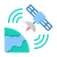

<!DOCTYPE html>
<html lang="zh-Hans">
<head>
<meta charset="utf-8">
<meta name="viewport" content="width=device-width, initial-scale=1, viewport-fit=cover">
<title>OneSoil</title>
<meta name="theme-color" content="#0E1512">
<meta name="apple-mobile-web-app-capable" content="yes">
<meta name="mobile-web-app-capable" content="yes">
<meta name="apple-mobile-web-app-status-bar-style" content="black-translucent">
<meta name="apple-mobile-web-app-title" content="OneSoil">
<link rel="manifest" href="./manifest.webmanifest">
<link rel="icon" type="image/png" href="./favicon.png">
<link rel="apple-touch-icon" href="./apple-touch-icon.png">
<link rel="stylesheet" href="https://cdnjs.cloudflare.com/ajax/libs/leaflet/1.9.4/leaflet.min.css">
<link rel="preconnect" href="https://fonts.gstatic.com" crossorigin>
<link rel="stylesheet" href="https://fonts.googleapis.com/css2?family=Manrope:wght@400;500;600;700;800&family=Noto+Sans+SC:wght@400;500;700&display=swap">
<style>
:root{
  --bg:#FFFFFF; --surf:#F3F5F4; --surf2:#E9EDEB; --line:#E2E7E4;
  --text:#101A17; --mute:#6B7C76;
  --accent:#1F6FEB; --accent-ink:#FFF;
  --good:#1E8E4A; --warn:#C2410C;
  --chrome:rgba(22,30,27,.82); --chrome-ink:#FFF;
  --navbg:#F3F5F4; --navsel:#FFFFFF;
  --sh:0 4px 14px rgba(10,24,20,.14), 0 18px 40px rgba(10,24,20,.14);
  --sh-s:0 2px 10px rgba(10,24,20,.16);
  box-sizing:border-box;
  --st:env(safe-area-inset-top,0px);
  --sb:env(safe-area-inset-bottom,0px);
  /* nav sits just above the home indicator, not a full inset below it */
  --gap:0px;
  --nb:0px;
  --navh:70px;
  --above:calc(var(--navh) + 12px);
}
:root[data-theme=dark]{
  --bg:#0D1412; --surf:#161F1C; --surf2:#1E2925; --line:#26322E;
  --text:#EAF1ED; --mute:#8CA099;
  --accent:#4D93FF; --accent-ink:#05111E;
  --good:#4ECB7B; --warn:#F08A5D;
  --chrome:rgba(16,23,21,.84); --chrome-ink:#FFF;
  --navbg:#161F1C; --navsel:#26322E;
  --sh:0 4px 14px rgba(0,0,0,.45), 0 18px 44px rgba(0,0,0,.55);
  --sh-s:0 2px 10px rgba(0,0,0,.5);
}
*,*::before,*::after{box-sizing:inherit}
html,body{height:100%;margin:0;overflow:hidden;overscroll-behavior:none;background:var(--navbg)}
body{
  background:transparent;color:var(--text);
  font-family:"Manrope","Noto Sans SC",-apple-system,BlinkMacSystemFont,"Segoe UI",sans-serif;
  font-size:15px;line-height:1.5;font-variant-numeric:tabular-nums;
  overflow:hidden;-webkit-tap-highlight-color:transparent;
}
button,input,select,textarea{font:inherit;color:inherit}
button{cursor:pointer;border:none;background:none}
:focus-visible{outline:3px solid var(--accent);outline-offset:2px}
@media (prefers-reduced-motion:reduce){*{transition:none!important}}
svg.i{width:24px;height:24px;stroke:currentColor;stroke-width:1.9;fill:none;
  stroke-linecap:round;stroke-linejoin:round;display:block;flex:0 0 auto}

/* ---------- map ---------- */
#map{position:fixed;top:0;left:0;right:0;bottom:0;
  background:var(--surf)}
.leaflet-container{background:var(--surf);font-family:inherit}
.leaflet-control-attribution{background:rgba(0,0,0,.45)!important;color:#fff!important;
  font-size:9px!important;padding:1px 5px!important;border-radius:5px 0 0 0}
.leaflet-control-attribution a{color:#cfe3f7!important}
.leaflet-bottom.leaflet-left{display:none}
.leaflet-bottom.leaflet-right{bottom:calc(var(--navh) + 2px)!important}

/* ---------- chrome pieces ---------- */
.dark-pill{background:var(--chrome);color:var(--chrome-ink);
  backdrop-filter:blur(20px) saturate(1.5);-webkit-backdrop-filter:blur(20px) saturate(1.5);
  box-shadow:var(--sh-s)}
[hidden]{display:none!important}
.fab{width:58px;height:58px;border-radius:50%;display:grid;place-items:center;flex:0 0 auto}
.fab svg.i{width:26px;height:26px;stroke-width:2}
.fab.on{background:var(--accent);color:var(--accent-ink)}

#topbar{position:fixed;z-index:620;left:14px;right:14px;top:calc(14px + var(--st));
  display:flex;gap:8px;align-items:flex-start}
#topbar .fab{width:54px;height:54px}
#topbar .fab svg.i{width:24px;height:24px}
/* ---------- place search ---------- */
#searchWrap{position:fixed;z-index:660;left:14px;right:14px;top:calc(14px + var(--st));display:none}
#searchWrap.on{display:block}
#srBar{display:flex;align-items:center;gap:10px;height:58px;border-radius:29px;padding:0 8px 0 18px}
#srIn{flex:1 1 auto;min-width:0;background:none;border:none;outline:none;
  font-size:16px;font-weight:600;letter-spacing:-.01em;color:inherit}
#srIn::placeholder{color:inherit;opacity:.55;font-weight:500}
#srList{margin-top:8px;border-radius:22px;overflow:hidden;max-height:52vh;overflow-y:auto;
  -webkit-overflow-scrolling:touch}
#srList:empty{display:none}
#srList .row{display:flex;gap:12px;align-items:flex-start;padding:14px 18px;text-align:left;
  width:100%;border-bottom:1px solid rgba(128,128,128,.22)}
#srList .row:last-child{border-bottom:none}
#srList .row b{display:block;font-size:15px;font-weight:700;letter-spacing:-.01em;line-height:1.3}
#srList .row small{display:block;font-size:12.5px;opacity:.7;line-height:1.35;margin-top:2px}
#srList .msg{padding:16px 18px;font-size:14px;opacity:.8}
#srList .attr{padding:10px 18px 12px;font-size:11.5px;opacity:.6;line-height:1.4}
#fieldBtn{flex:1 1 auto;min-width:0;height:58px;border-radius:29px;padding:0 10px 0 18px;
  display:flex;align-items:center;gap:12px;text-align:left}
#fieldBtn .tx{flex:1 1 auto;min-width:0}
#fieldBtn .tx b{display:block;font-size:16px;font-weight:800;letter-spacing:-.02em;
  white-space:nowrap;overflow:hidden;text-overflow:ellipsis;line-height:1.2}
#fieldBtn .tx small{font-size:12.5px;opacity:.72;display:block;line-height:1.3}

#rightcol{position:fixed;z-index:620;right:14px;display:flex;flex-direction:column;gap:10px;
  bottom:var(--above)}

#layerPill{position:fixed;z-index:620;left:50%;transform:translateX(-50%);
  bottom:var(--above);height:54px;border-radius:27px;padding:0 24px;
  display:flex;align-items:center;gap:11px;font-size:15.5px;font-weight:700;letter-spacing:-.01em}

#dot{position:absolute;right:10px;top:10px;width:9px;height:9px;border-radius:50%}
#dot.ok{background:#4ECB7B}#dot.bad{background:#F08A5D}
#dot.busy{background:#6FA8FF;animation:pl 1s infinite}
@keyframes pl{50%{opacity:.2}}

/* ---------- bottom nav ---------- */
#nav{position:fixed;z-index:640;left:8px;right:8px;bottom:0;
  height:var(--navh);border-radius:36px;background:var(--bg);box-shadow:var(--sh);
  border:1px solid var(--line);display:flex;align-items:center;padding:0 6px}
#nav button{flex:1 1 0;height:60px;border-radius:30px;display:flex;flex-direction:column;
  align-items:center;justify-content:center;gap:3px;color:var(--mute);min-width:0}
#nav button b{font-size:11.5px;font-weight:600;letter-spacing:-.01em}
#nav button[aria-current=true]{background:var(--surf);color:var(--good)}

/* ---------- pages ---------- */
#page{position:fixed;z-index:600;top:0;left:0;right:0;bottom:0;
  background:var(--bg);overflow-y:auto;
  -webkit-overflow-scrolling:touch;padding:calc(16px + var(--st)) 16px calc(var(--above) + 24px)}
#page[hidden]{display:none}
.brand{display:flex;align-items:center;gap:11px;margin:2px 0 14px}
.brand img{border-radius:10px;display:block}
.brand b{font-size:19px;font-weight:800;letter-spacing:-.02em}
.h1{font-size:30px;font-weight:800;letter-spacing:-.03em;margin:4px 0 2px}
.h1sub{color:var(--mute);font-size:13.5px;margin:0 0 18px}

/* ---------- sheets ---------- */
#scrim{position:fixed;top:0;left:0;right:0;bottom:0;z-index:700;background:rgba(6,14,12,.45);
  opacity:0;pointer-events:none;transition:opacity .2s}
#scrim.on{opacity:1;pointer-events:auto}
#sheet{position:fixed;z-index:710;left:0;right:0;bottom:0;background:var(--bg);
  border-radius:26px 26px 0 0;box-shadow:var(--sh);max-height:86vh;overflow-y:auto;
  padding:10px 20px calc(26px + var(--sb));transform:translateY(102%);
  transition:transform .28s cubic-bezier(.2,.85,.25,1)}
#sheet.on{transform:translateY(0)}
#sheet .bar{width:40px;height:5px;border-radius:3px;background:var(--line);margin:0 auto 16px}
#sheet h2{font-size:22px;font-weight:800;letter-spacing:-.02em;margin:0 0 16px}

/* layer tiles */
.tiles{display:grid;grid-template-columns:repeat(3,1fr);gap:8px}
.tile{border-radius:20px;padding:14px 6px 12px;display:flex;flex-direction:column;
  align-items:center;gap:9px}
.tile[aria-pressed=true]{background:var(--surf)}
.tile .sq{width:74px;height:74px;border-radius:21px;display:grid;place-items:center;
  color:#fff;box-shadow:var(--sh-s)}
.tile .sq svg.i{width:30px;height:30px;stroke-width:2}
.tile span{font-size:13.5px;font-weight:600;line-height:1.25;text-align:center}

/* ---------- content blocks ---------- */
.card{background:var(--surf);border-radius:20px;padding:16px;margin-bottom:12px}
.card h3{margin:0 0 3px;font-size:16px;font-weight:800;letter-spacing:-.02em}
.sub{font-size:13px;color:var(--mute);margin:3px 0 0;line-height:1.55}
.src{font-size:11.5px;color:var(--mute);line-height:1.55;margin:12px 0 0;padding-top:11px;border-top:1px solid var(--line)}
.src a{color:var(--accent)}
.row{display:flex;gap:10px;align-items:center;flex-wrap:wrap}
label.f{display:block;font-size:13px;color:var(--mute);margin:14px 0 6px;font-weight:500}
input[type=text],input[type=date],input[type=password],select,textarea{
  width:100%;background:var(--bg);border:1.5px solid var(--line);border-radius:14px;
  padding:13px 14px;font-size:15px}
textarea{font-size:11.5px;line-height:1.6;min-height:160px;resize:vertical;
  font-family:ui-monospace,SFMono-Regular,Menlo,monospace}
input[type=range]{width:100%;accent-color:var(--accent);height:30px}
.btn{background:var(--accent);color:var(--accent-ink);border-radius:17px;
  padding:16px 24px;font-weight:800;font-size:15.5px;letter-spacing:-.01em;
  display:inline-flex;align-items:center;justify-content:center;gap:9px;min-height:56px}
.btn.wide{width:100%}
.btn.alt{background:var(--surf2);color:var(--text);font-weight:700}
.btn:disabled{opacity:.4}
.grid{display:grid;grid-template-columns:repeat(auto-fit,minmax(92px,1fr));gap:9px;margin:12px 0}
.stat{background:var(--bg);border-radius:16px;padding:12px 13px}
.stat b{display:block;font-size:22px;font-weight:800;line-height:1.15;letter-spacing:-.03em}
.stat small{color:var(--mute);font-size:11.5px}
.msg{border-radius:16px;padding:13px 15px;font-size:13.5px;margin:12px 0;line-height:1.55}
.msg.err{background:color-mix(in srgb,var(--warn) 15%,transparent);color:var(--warn)}
.msg.info{background:var(--surf);color:var(--mute)}
.empty{color:var(--mute);font-size:14px;padding:26px 2px;text-align:center}
table{width:100%;border-collapse:collapse;font-size:13.5px}
th,td{text-align:left;padding:9px 4px;border-bottom:1px solid var(--line)}
th{color:var(--mute);font-weight:600;font-size:12px}
tr:last-child td{border-bottom:none}
.ramp{display:flex;height:10px;border-radius:5px;overflow:hidden;margin:14px 0 5px}
.ramp i{flex:1}
.ramp-lab{display:flex;justify-content:space-between;font-size:11.5px;color:var(--mute)}
code{background:var(--bg);padding:3px 7px;border-radius:7px;font-size:12.5px;
  font-family:ui-monospace,Menlo,monospace}
svg.chart{width:100%;display:block;margin-top:8px}
ul.plain,ol.plain{margin:10px 0 0;padding-left:19px;font-size:14px;line-height:1.7}

/* ---------- weather map chrome ---------- */
#wxwrap{position:fixed;z-index:618;left:0;right:0;bottom:calc(var(--above) + 4px);
  display:none;flex-direction:column;gap:10px}
#wxwrap.on{display:flex}
#wxCard{margin:0 12px;border-radius:24px;padding:15px 17px;background:var(--chrome);
  color:#fff;backdrop-filter:blur(20px) saturate(1.5);-webkit-backdrop-filter:blur(20px) saturate(1.5);
  box-shadow:var(--sh);display:flex;align-items:center;gap:14px;text-align:left}
#wxCard .big{font-size:27px;font-weight:800;letter-spacing:-.03em;line-height:1.1}
#wxCard .lab{font-size:11.5px;opacity:.72;line-height:1.3}
#wxCard .col{min-width:0;display:flex;flex-direction:column;justify-content:center}
#wxCard .vr{width:1px;align-self:stretch;background:rgba(255,255,255,.18)}
#wxCard .go{margin-left:auto;width:42px;height:42px;border-radius:50%;
  background:rgba(255,255,255,.14);display:grid;place-items:center;flex:0 0 auto}
#wxTrack{display:flex;gap:6px;overflow-x:auto;padding:2px 12px 4px;scrollbar-width:none}
#wxTrack::-webkit-scrollbar{display:none}
.hcell{flex:0 0 60px;border-radius:20px;padding:9px 4px 8px;background:var(--chrome);
  color:#fff;display:flex;flex-direction:column;align-items:center;gap:6px;
  backdrop-filter:blur(16px);-webkit-backdrop-filter:blur(16px);box-shadow:var(--sh-s)}
.hcell.sel{background:#fff;color:#101A17;box-shadow:0 4px 18px rgba(0,0,0,.35)}
.hcell b{font-size:13.5px;font-weight:800;letter-spacing:-.02em}
.hcell .bar{width:18px;height:36px;border-radius:9px;background:rgba(255,255,255,.2);
  display:flex;align-items:flex-end;overflow:hidden}
.hcell.sel .bar{background:rgba(16,26,23,.12)}
.hcell .bar i{width:100%;background:#4DA3FF;border-radius:9px;min-height:2px}
.hcell small{font-size:10.5px;opacity:.78;font-weight:600}
#wxLegend{position:fixed;left:14px;top:46%;transform:translateY(-50%);z-index:616;
  width:13px;height:180px;border-radius:7px;display:none;box-shadow:var(--sh-s);
  background:linear-gradient(to top,#9AD8FF,#3D9BFF,#1E4FD6,#8A2BD6,#D8306B)}
#wxLegend span{position:absolute;left:20px;font-size:10.5px;color:#fff;
  text-shadow:0 1px 3px rgba(0,0,0,.8);white-space:nowrap}
.wxpin{position:absolute;left:0;top:0;transform:translateX(-50%);display:flex;
  flex-direction:column;align-items:center;pointer-events:none}
.wxbadge{background:#fff;color:#101A17;border-radius:16px;padding:8px 12px;
  box-shadow:0 3px 14px rgba(0,0,0,.4);text-align:center;white-space:nowrap;font-weight:800}
.wxbadge .t{font-size:19px;letter-spacing:-.03em;display:flex;align-items:center;gap:6px;justify-content:center}
.wxbadge .w{font-size:12.5px;font-weight:600;opacity:.75;margin-top:1px}
.wxbadge .nm{margin-top:6px;font-size:12.5px;font-weight:600;color:#fff;
  text-shadow:0 1px 4px rgba(0,0,0,.9)}
.wxbadge .stem{width:2px;height:14px;background:#fff;margin:0 auto;opacity:.9}

/* field list rows */
.frow{display:flex;align-items:center;gap:14px;padding:12px 4px;border-bottom:1px solid var(--line);width:100%;text-align:left}
.frow:last-of-type{border-bottom:none}
.thumb{width:62px;height:62px;border-radius:16px;background:var(--surf);flex:0 0 auto;
  display:grid;place-items:center;overflow:hidden}
.frow .tx{flex:1 1 auto;min-width:0}
.frow .tx b{display:block;font-size:17px;font-weight:700;letter-spacing:-.02em;
  white-space:nowrap;overflow:hidden;text-overflow:ellipsis}
.frow .tx small{color:var(--mute);font-size:13px}
.frow.sel{background:var(--surf);border-radius:18px;border-bottom-color:transparent}
</style>
</head>
<body>

<div id="map"></div>

<div id="topbar">
  <button id="fieldBtn" class="dark-pill">
    <svg class="i" viewBox="0 0 24 24"><path d="M3 7.5A1.5 1.5 0 0 1 4.5 6h4l2 2.5h7A1.5 1.5 0 0 1 19 10v7a1.5 1.5 0 0 1-1.5 1.5h-13A1.5 1.5 0 0 1 3 17z"/></svg>
    <span class="tx"><b id="fbName"></b><small id="fbSub"></small></span>
    <svg class="i" viewBox="0 0 24 24" style="width:20px;opacity:.7"><path d="M8 10l4-4 4 4M8 14l4 4 4-4"/></svg>
  </button>
  <button id="searchBtn" class="fab dark-pill"><svg class="i" viewBox="0 0 24 24"><circle cx="11" cy="11" r="6.5"/><path d="M16 16l4.5 4.5"/></svg></button>
  <button id="langBtn" class="fab dark-pill" style="font-size:15px;font-weight:800"></button>
  <button id="themeBtn" class="fab dark-pill" style="position:relative"><span id="thIco"></span><span id="dot"></span></button>
</div>

<div id="searchWrap">
  <div id="srBar" class="dark-pill">
    <svg class="i" viewBox="0 0 24 24" style="width:22px;opacity:.75;flex:0 0 auto"><circle cx="11" cy="11" r="6.5"/><path d="M16 16l4.5 4.5"/></svg>
    <input id="srIn" type="search" autocomplete="off" autocapitalize="off" spellcheck="false" enterkeyhint="search">
    <button id="srClose" class="fab dark-pill" style="width:42px;height:42px;box-shadow:none;background:rgba(128,128,128,.22)"><svg class="i" viewBox="0 0 24 24" style="width:20px"><path d="M6 6l12 12M18 6L6 18"/></svg></button>
  </div>
  <div id="srList" class="dark-pill"></div>
</div>

<div id="rightcol">
  <button id="btnDraw" class="fab dark-pill"><svg class="i" viewBox="0 0 24 24"><path d="M16.5 3.8l3.7 3.7L8.4 19.3l-4.6.9.9-4.6z"/></svg></button>
  <button id="btnUndo" class="fab dark-pill" hidden><svg class="i" viewBox="0 0 24 24"><path d="M9 14L4 9l5-5"/><path d="M4 9h10a6 6 0 0 1 0 12H8"/></svg></button>
  <button id="btnCancel" class="fab dark-pill" hidden><svg class="i" viewBox="0 0 24 24"><path d="M6 6l12 12M18 6L6 18"/></svg></button>
  <button id="btnLoc" class="fab dark-pill"><svg class="i" viewBox="0 0 24 24"><path d="M21 3L3 10.5l7.5 3 3 7.5z"/></svg></button>
  <button id="btnRadar" class="fab dark-pill" hidden><svg class="i" viewBox="0 0 24 24"><path d="M12 3.5s6 6.4 6 10.2a6 6 0 1 1-12 0C6 9.9 12 3.5 12 3.5z"/></svg></button>
  <button id="btnInfo" class="fab dark-pill"><svg class="i" viewBox="0 0 24 24"><circle cx="12" cy="12" r="9"/><path d="M12 11v5M12 8h.01"/></svg></button>
</div>

<div id="wxLegend"><span style="top:-6px" id="lgHi"></span><span style="bottom:-6px" id="lgLo"></span></div>
<div id="wxwrap">
  <button id="wxCard"></button>
  <div id="wxTrack"></div>
</div>

<button id="layerPill" class="dark-pill">
  <svg class="i" viewBox="0 0 24 24" style="width:22px"><path d="M12 3l9 5-9 5-9-5z"/><path d="M3 13l9 5 9-5"/></svg>
  <span id="layerName"></span>
</button>

<div id="page" hidden></div>

<nav id="nav"></nav>

<div id="scrim"></div>
<div id="sheet"><div class="bar"></div><div id="sheetBody"></div></div>

<script src="https://cdnjs.cloudflare.com/ajax/libs/leaflet/1.9.4/leaflet.js"></script>
<script>
"use strict";
const APP_NAME = "OneSoil";

/* ============================================================
   BUILT-IN CREDENTIALS — fill these four in and your users
   never see a settings form. Leave any of them "" to fall back
   to per-device entry.

   NEVER put an OAuth client secret here. This file is public.
   The secret belongs in the Cloudflare Worker; PROXY below is
   only the Worker's URL, which is safe to publish.
   ============================================================ */
const BUILT_IN = {
  instanceId : "c31b98a4-0a23-45f8-ae81-32f02901934a",
  proxy      : "https://cdse-token.hockhynnwoo.workers.dev",
  gkey       : "",                 // Google Places key, referrer-restricted
  layerTrue  : "TRUE_COLOR",       // this configuration uses underscores
  layerNdvi  : "VEGETATION_INDEX", // the L2A template calls NDVI this
  layerMoist : "MOISTURE_INDEX",
  layerProd  : "PRODUCTIVITY"      // still has to be created in CDSE, Mosaicking = ORBIT
};
const PRECONFIGURED = !!BUILT_IN.instanceId;

/* ===================== icons ===================== */
const IC = {
  map:`<circle cx="12" cy="12" r="9"/><path d="M3 12h18M12 3a15 15 0 0 1 0 18 15 15 0 0 1 0-18"/>`,
  fields:`<path d="M4 20c0-7 4-13 8-16M10 20c0-6 3-11 6-14M16 20c0-4 2-8 4-10"/><rect x="3" y="4" width="18" height="16" rx="3"/>`,
  trend:`<path d="M3 17l5-6 4 4 8-9"/><path d="M15 6h5v5"/>`,
  wx:`<path d="M7 17h9a4 4 0 0 0 .4-7.98A6 6 0 0 0 5.2 10.3 3.4 3.4 0 0 0 6 17z"/><path d="M12 3.5v1.2M5.6 6.1l.9.9M18.4 6.1l-.9.9"/>`,
  set:`<circle cx="12" cy="12" r="3.2"/><path d="M19.4 14.5a1.7 1.7 0 0 0 .34 1.87l.06.06a2 2 0 1 1-2.83 2.83l-.06-.06a1.7 1.7 0 0 0-2.87 1.2v.17a2 2 0 1 1-4 0v-.09a1.7 1.7 0 0 0-2.93-1.16l-.06.06a2 2 0 1 1-2.83-2.83l.06-.06A1.7 1.7 0 0 0 4 14.5a2 2 0 1 1 0-4h.09A1.7 1.7 0 0 0 5.25 7.6l-.06-.06a2 2 0 1 1 2.83-2.83l.06.06A1.7 1.7 0 0 0 11 3.6a2 2 0 1 1 4 0v.09a1.7 1.7 0 0 0 2.87 1.16l.06-.06a2 2 0 1 1 2.83 2.83l-.06.06A1.7 1.7 0 0 0 20.4 10.5H21a2 2 0 1 1 0 4h-.09a1.7 1.7 0 0 0-1.51 0z"/>`,
  leaf:`<path d="M4 20c0-9 6-15 16-16 0 11-6 16-13 16H4z"/><path d="M5 19c3-5 7-8 11-9"/>`,
  sat:`<path d="M6.5 10.5L3 14l4 4 3.5-3.5M13.5 6.5L17 3l4 4-3.5 3.5"/><path d="M9 9l6 6M12 18a5 5 0 0 0 5-5"/>`,
  drop:`<path d="M12 3.5s6 6.4 6 10.2a6 6 0 1 1-12 0C6 9.9 12 3.5 12 3.5z"/>`,
  grid:`<rect x="3.5" y="3.5" width="17" height="17" rx="3"/><path d="M3.5 9h17M3.5 15h17M9 3.5v17M15 3.5v17"/>`,
  crop:`<path d="M12 21V8"/><path d="M12 11c-3 0-5-2-5-5 3 0 5 2 5 5zM12 11c3 0 5-2 5-5-3 0-5 2-5 5z"/><path d="M12 17c-3 0-5-2-5-5 3 0 5 2 5 5zM12 17c3 0 5-2 5-5-3 0-5 2-5 5z"/>`,
  none:`<rect x="4" y="4" width="16" height="16" rx="4"/>`,
  sun:`<circle cx="12" cy="12" r="4.2"/><path d="M12 2.6v2M12 19.4v2M2.6 12h2M19.4 12h2M5.3 5.3l1.4 1.4M17.3 17.3l1.4 1.4M18.7 5.3l-1.4 1.4M6.7 17.3l-1.4 1.4"/>`,
  moon:`<path d="M20 14.5A8.5 8.5 0 0 1 9.5 4a8.5 8.5 0 1 0 10.5 10.5z"/>`,
  plus:`<path d="M12 5v14M5 12h14"/>`,
  trash:`<path d="M4 7h16M10 11v6M14 11v6"/><path d="M6 7l1 13h10l1-13M9 7V4h6v3"/>`,
  refresh:`<path d="M20 11a8 8 0 1 0-1.5 6"/><path d="M20 5v6h-6"/>`
};
const ic = (k, sz) => `<svg class="i" viewBox="0 0 24 24"${sz?` style="width:${sz}px;height:${sz}px"`:""}>${IC[k]}</svg>`;

/* ===================== i18n ===================== */
const LANGS=["zh","en","ms"], LL={zh:"中",en:"EN",ms:"BM"};
const T={
zh:{
 secShow:"显示 / 隐藏 Secret",
 tMissing:"配置里找不到这几个图层名：", tAllMatch:"四个图层名都对得上",
 setT7:"已经设定好了", preNote:"图层、天气、搜索都已经由开发者设好，你不用填任何东西，直接用就行。",
 advShow:"我要自己填（进阶）", advHide:"收起进阶设定",
 setT6:"地块备份", bkNote:"地块只存在这台手机的浏览器里。iOS 会在空间不足、清纪录、或删掉主画面图标时把它清掉，所以请自己留一份。把下面整段文字复制去备忘录或 WhatsApp 给自己，就是完整备份。",
 bkCopy:"复制备份", bkCopied:"已复制", bkFile:"下载成档案", bkPasteL:"贴上备份文字，按还原",
 bkRestore:"还原", bkBad:"这段文字不是有效的备份", bkAdded:"已加入 ", bkSkip:" 块（重复的略过）",
 setT5:"地名搜索（可选）", setGkey:"Google Places API Key",
 setGkeyNote:"留空就用 OpenStreetMap（免费、不用注册，但偏远小地方常常查不到）。填了 Google 的 key 就改用 Google Places 的地点库，小地方、店名、园丘名都搜得到。<br><br>代价：要开 Google Cloud 帐号并绑信用卡，就算用不到钱也必须开通计费。Places API 的 Text Search 每月有 5,000 次免费额度，你一个月搜几十次根本用不完。<br><br>这个 key 会写在网页里，任何人打开原始码都看得到。所以一定要在 Google Cloud Console 里：① 用「HTTP referrer」限制成只有你的 GitHub Pages 网址能用；② 只勾 Places API；③ 把配额上限设在免费额度以下。做完这三步，key 被别人捡去也刷不出帐单。",
 srchAttrG:"地名搜索：Google Places API。由你按下搜索才发出一次请求。",
 diagT:"版面诊断", diagNote:"排底部空白用的。截这张图给我就够判断了。",
 drawCancel:"不画了", drawGone:"已取消，没有存",
 srch:"搜地方", srchPh:"输入地名、城镇或坐标", srchGo:"搜索中…",
 srchNone:"找不到这个地方。换个写法，或直接输入「纬度, 经度」。",
 srchFail:"搜索失败：", srchAttr:"地名搜索：Nominatim / © OpenStreetMap 贡献者。由你按下搜索才发出请求，不做边打边搜。",
 nav:{map:"地图",fields:"地块",trend:"趋势",wx:"天气",set:"设置"},
 allFields:"全部地块", season:"季", noField:"还没有地块", tapToDraw:"点 ✎ 画一块",
 lyrSheet:"地图图层", lyr:{OFF:"只看底图",TRUE:"真彩影像",NDVI:"长势",PROD:"产能分区",MOIST:"水分",STREET:"街道图"},
 newFieldQ:"这块地叫什么？", field:"地块",
 drawStart:"点地图加点，点 ✓ 收尾（至少 3 点）", drawMin:"至少要 3 个点", saved:"已存到本机",
 ha:"公顷", lat:"中心纬度", lon:"中心经度", del:"删掉这块地", delQ:"确定删掉？", addField:"画新地块",
 locating:"定位中…", located:"已定位", locFail:"定位失败：", locNo:"这个浏览器不支持定位",
 fieldsTitle:"地块", fieldsSub:"全部存在这台手机里",
 satTitle:"影像设置", satDate:"影像日期", satWin:"在这段天数里挑云最少的一景",
 days:"天", maxcc:"云量上限", rampLo:"裸土 · 枯", rampHi:"浓密冠层",
 satNote:"成龄果树冠层浓密，NDVI 容易饱和。看同一地块不同日期的「变化」，比看绝对数值有用。",
 satSrc:"影像：Copernicus Sentinel-2 L2A，10 m，重访 3–5 天，由 Sentinel Hub 在 Copernicus Data Space Ecosystem 上实时处理。云掩膜用 SCL 场景分类波段。",
 trendTitle:"指数趋势", trendSub:"地块平均值随时间变化",
 idxWhich:{NDVI:"NDVI 长势",NDRE:"NDRE 红边",NDMI:"NDMI 冠层含水"},
 lookback:"往回看", months:"个月", fetch:"获取数据", fetching:"正在取数…",
 latest:"最新均值", change:"比上一景", pixels:"有效像元", periods:"可用时段",
 tDate:"日期",tMean:"均值",tP25:"P25",tP75:"P75",tPx:"像元",
 noClear:"这段时间没有够干净的影像。把时间拉长，或把云量上限调高。",
 idxNote:"每个点是一个 10 天窗口里云最少那景的地块平均值。被云遮住的时段直接空掉，不插值、不补数。",
 idxSrc:"来源：Sentinel Hub Statistical API（CDSE），数据集 sentinel-2-l2a，10 m，10 天聚合，按云最少排序。只保留 SCL 为 4/5/6/7 的像元。NDVI=(B08−B04)/(B08+B04)；NDRE=(B08−B05)/(B08+B05)；NDMI=(B08−B11)/(B08+B11)。",
 wxTitle:"天气", wxSub:"取自地块几何中心", wxGet:"获取天气", wxUpd:"更新于",
 temp:"气温",hum:"相对湿度",rain:"当前降水",gust:"阵风",
 rain14:"14 天降水量", soil:"土壤含水量（分层）", depth:"深度", vwc:"体积含水率 m³/m³", noLayer:"该模式没有这一层",
 soilWarn:"这一栏是数值天气模式算出来的，不是卫星测的，也不是地里探头测的。要做灌溉决策，必须先用张力计或 TDR 探头校准过才能信。",
 et0:"参考蒸散量 ET₀（FAO-56）", centerAt:"取点位置",
 wxSrc:"来源：Open-Meteo 预报 API，免费开放、无需钥匙，底层模式自动挑选（东南亚通常是 ECMWF IFS 与 DWD ICON 的组合）。土壤含水量与 ET₀ 属模式推算值，非实测。真正的卫星土壤湿度（SMAP、SMOS）像元约 9–40 km，覆盖不到单个园区，本 App 不用。",
 wxNow:"现在", wxChance:"降雨几率", wxAmt:"降雨量", wxWind:"风", wxTempL:"气温",
 wxDetail:"完整预报", wxTapField:"先画一块地，天气取地块中心点。", wxLoading:"正在取天气…",
 wxRadar:"雷达回波", wxRadarOn:"雷达已开", wxRadarOff:"雷达已关",
 wxRadarNote:"雷达图层来自 RainViewer 的免费全球雷达拼接：过去 2 小时实测 + 约 30 分钟短临。公开版分辨率只到 zoom 7 左右，放大后会糊。马来西亚部分地区没有雷达资料，图层空白属正常，不是故障。",
 lgLight:"小雨", lgHeavy:"大雨", close:"关闭",
 wc:{0:"晴",1:"大致晴",2:"多云",3:"阴",45:"雾",48:"雾",51:"毛毛雨",53:"毛毛雨",55:"毛毛雨",
     61:"小雨",63:"中雨",65:"大雨",66:"冻雨",67:"冻雨",71:"雪",73:"雪",75:"雪",77:"雪粒",
     80:"阵雨",81:"阵雨",82:"强阵雨",85:"阵雪",86:"阵雪",95:"雷雨",96:"雷雨冰雹",99:"雷雨冰雹"},
 srcTitle:"数据来源", srcWhat:"内容", srcFrom:"来源",
 srcR:[["NDVI / NDRE / NDMI","Copernicus Sentinel-2 L2A，经 Sentinel Hub 在 CDSE 上实时处理"],
       ["产能分区","同上，多时相脚本算多年 NDVI 平均"],
       ["天气 / ET₀ / 土壤含水","Open-Meteo 数值天气模式"],
       ["卫星底图","Esri World Imagery"],
       ["街道底图","OpenStreetMap 贡献者 · CARTO"],
       ["地块边界","你自己画的，只存在这台手机，不上传"]],
 srcT2:"这个 App 不会做的事",
 srcNot:["不编数据。取不到就报错，绝不给一条假曲线。","不插值补空。云遮住的日子就是空的。",
         "不把模式值说成实测值。","不做单株诊断，10 m 像元做不到。"],
 srcT3:"引用与署名",
 setTitle:"设置", setSub:"全部只存在这台手机",
 setT1:"第一步：免费注册",
 setSteps:["到 dataspace.copernicus.eu 注册账号。","Sentinel Hub Dashboard → Configuration Utility → 用 “Sentinel-2 L2A” 模板新建配置。","复制该配置的 Instance ID，贴到下面。"],
 setQuota:"免费账号每月 10,000 个处理单元（PU），一个园区天天看也用不完。",
 setT2:"Sentinel Hub 连接", setInst:"Instance ID（图层必需）",
 setLn:"图层名 — 长势",setLm:"图层名 — 水分",setLp:"图层名 — 产能",setLt:"图层名 — 真彩",
 setLayerNote:"图层名要跟 CDSE 后台那个图层 ID 一模一样，大小写也要对。",
 setT3:"OAuth（只有「趋势」需要）", setProxy:"取令牌代理网址（被 CORS 挡住时才填）",
 setSecWarn:"Secret 存在这台手机的浏览器里。自用工具的取舍：方便，但任何能碰到这台手机的人都读得到。别把这个页面分享出去。",
 setT4:"产能分区图层脚本",
 setProdNote:"到 CDSE 后台新建图层，名字 PRODUCTIVITY，Mosaicking 选 ORBIT，时间范围设过去 3 年，粘贴：",
 copy:"复制脚本",copied:"已复制",copyManual:"请手动复制",
 save:"保存设置",test:"测试连接",testing:"测试中…",testTitle:"连接测试",cfgSaved:"设置已保存到这台手机。",
 needSetup:"还没连上卫星数据。去「设置」填 CDSE 的 Instance ID — 免费注册，步骤都写好了。",
 needField:"先画一块地。",
 noToken:"还没填 OAuth client id / secret（在设置里）",
 corsErr:"取令牌时网络被挡住了（多半是浏览器 CORS）。解决办法：在设置里填一个自己的取令牌代理网址。原始错误：",
 tokFail:"取令牌失败 HTTP ", statFail:"统计接口 HTTP ",
 layerFail:"图层加载失败，检查 Instance ID 与图层名", loading:"正在取影像…", loaded:"图层已加载", got:"已取到 ",
 tOM:"Open-Meteo 天气",tWMS:"Sentinel Hub WMS",tOAuth:"OAuth 令牌",
 tPass:"通",tGot:"拿到了",tNoInst:"还没填 Instance ID",
 tSkipOAuth:"没填 OAuth（不影响图层，只影响「趋势」）",
 tWmsCors:"读 WMS 能力文档被 CORS 挡了。这不代表图层不能用 — 回地图看有没有出图。",
 tAvail:"可用图层："
},
en:{
 secShow:"Show / hide secret",
 tMissing:"Not present in the configuration: ", tAllMatch:"All four layer names match",
 setT7:"Already set up", preNote:"Layers, weather and search are configured by the developer. Nothing to fill in — just use the app.",
 advShow:"Use my own keys (advanced)", advHide:"Hide advanced settings",
 setT6:"Field backup", bkNote:"Fields live only in this phone's browser. iOS clears that when storage runs low, when you clear history, or when you delete the home-screen icon. Keep your own copy: copy the text below into Notes or message it to yourself.",
 bkCopy:"Copy backup", bkCopied:"Copied", bkFile:"Download as file", bkPasteL:"Paste a backup here, then Restore",
 bkRestore:"Restore", bkBad:"That text is not a valid backup", bkAdded:"Added ", bkSkip:" field(s); duplicates skipped",
 setT5:"Place search (optional)", setGkey:"Google Places API key",
 setGkeyNote:"Leave blank to use OpenStreetMap — free, no signup, but it often misses small remote places. Paste a Google key and searches go to Google Places instead, which knows small kampungs, shop names and estate names.<br><br>The cost: you need a Google Cloud account with a card on file, and billing must be enabled even if you never spend. Places Text Search includes 5,000 free calls a month — a few dozen searches will not come close.<br><br>The key sits in the page source where anyone can read it. So in Google Cloud Console you must: (1) restrict it by HTTP referrer to your GitHub Pages URL only; (2) enable Places API only; (3) set a quota cap below the free allowance. With those three done, a stolen key cannot run up a bill.",
 srchAttrG:"Place search: Google Places API. One request, sent only when you press search.",
 diagT:"Layout diagnostics", diagNote:"For chasing the bottom gap. A screenshot of this is enough to diagnose it.",
 drawCancel:"Cancel drawing", drawGone:"Cancelled, nothing saved",
 srch:"Find a place", srchPh:"Town, place name, or coordinates", srchGo:"Searching…",
 srchNone:"No match. Try another spelling, or type \"lat, lon\" directly.",
 srchFail:"Search failed: ", srchAttr:"Place search: Nominatim / © OpenStreetMap contributors. Sent only when you press search — no type-ahead.",
 nav:{map:"Map",fields:"Fields",trend:"Trends",wx:"Weather",set:"Settings"},
 allFields:"All fields", season:"Season", noField:"No fields yet", tapToDraw:"Tap ✎ to draw one",
 lyrSheet:"Map layer", lyr:{OFF:"Basemap only",TRUE:"True colour",NDVI:"Vegetation",PROD:"Productivity",MOIST:"Moisture",STREET:"Street map"},
 newFieldQ:"Name this field", field:"Field",
 drawStart:"Tap the map to add points, tap ✓ to close (3 minimum)", drawMin:"Need at least 3 points", saved:"Saved on this device",
 ha:"hectares", lat:"centre lat", lon:"centre lon", del:"Delete this field", delQ:"Delete it?", addField:"Draw a new field",
 locating:"Finding you…", located:"Located", locFail:"Location failed: ", locNo:"No location support in this browser",
 fieldsTitle:"Fields", fieldsSub:"All stored on this device",
 satTitle:"Imagery", satDate:"Image date", satWin:"Pick the least cloudy scene within",
 days:"days", maxcc:"Max cloud", rampLo:"Bare · dry", rampHi:"Dense canopy",
 satNote:"Mature tree canopies are dense, so NDVI saturates. Track the change between dates on the same field rather than the absolute number.",
 satSrc:"Imagery: Copernicus Sentinel-2 L2A, 10 m, 3–5 day revisit, processed live by Sentinel Hub on the Copernicus Data Space Ecosystem. Cloud masking uses the SCL scene classification band.",
 trendTitle:"Trends", trendSub:"Field mean over time",
 idxWhich:{NDVI:"NDVI vegetation",NDRE:"NDRE red edge",NDMI:"NDMI canopy water"},
 lookback:"Look back", months:"months", fetch:"Fetch data", fetching:"Fetching…",
 latest:"latest mean", change:"vs previous", pixels:"valid pixels", periods:"periods",
 tDate:"Date",tMean:"Mean",tP25:"P25",tP75:"P75",tPx:"Pixels",
 noClear:"No clear scene in this window. Extend the period or raise the cloud limit.",
 idxNote:"Each point is the field mean of the least-cloudy scene in a 10-day window. Clouded periods stay empty — nothing is interpolated or filled in.",
 idxSrc:"Source: Sentinel Hub Statistical API (CDSE), sentinel-2-l2a, 10 m, 10-day aggregation, least-cloud ordering. Only SCL classes 4/5/6/7 kept. NDVI=(B08−B04)/(B08+B04); NDRE=(B08−B05)/(B08+B05); NDMI=(B08−B11)/(B08+B11).",
 wxTitle:"Weather", wxSub:"Sampled at the field centroid", wxGet:"Fetch weather", wxUpd:"updated",
 temp:"Air temp",hum:"Humidity",rain:"Rain now",gust:"Gust",
 rain14:"Rainfall, next 14 days", soil:"Soil water by depth", depth:"Depth", vwc:"Volumetric water m³/m³", noLayer:"not in this model",
 soilWarn:"These come from a numerical weather model, not a satellite and not a probe in your soil. Calibrate against a tensiometer or TDR probe before using them for irrigation decisions.",
 et0:"Reference evapotranspiration ET₀ (FAO-56)", centerAt:"Sampled at",
 wxSrc:"Source: Open-Meteo forecast API — free, open, no key. The model is chosen automatically (usually ECMWF IFS with DWD ICON in Southeast Asia). Soil water and ET₀ are model estimates, not measurements. True satellite soil moisture (SMAP, SMOS) has 9–40 km pixels, too coarse for one estate, so it is not used.",
 wxNow:"Now", wxChance:"Rain chance", wxAmt:"Rainfall", wxWind:"Wind", wxTempL:"Air temp",
 wxDetail:"Full forecast", wxTapField:"Draw a field first — weather is read at its centre.", wxLoading:"Fetching weather…",
 wxRadar:"Rain radar", wxRadarOn:"Radar on", wxRadarOff:"Radar off",
 wxRadarNote:"The radar layer is RainViewer's free global radar mosaic: 2 hours of observations plus roughly 30 minutes of nowcast. The public tiles only go to about zoom 7, so they blur when you zoom in. Parts of Malaysia have no radar coverage, so an empty layer is normal, not a fault.",
 lgLight:"Light", lgHeavy:"Heavy", close:"Close",
 wc:{0:"Clear",1:"Mostly clear",2:"Partly cloudy",3:"Overcast",45:"Fog",48:"Fog",51:"Drizzle",53:"Drizzle",55:"Drizzle",
     61:"Light rain",63:"Rain",65:"Heavy rain",66:"Freezing rain",67:"Freezing rain",71:"Snow",73:"Snow",75:"Snow",77:"Snow grains",
     80:"Showers",81:"Showers",82:"Violent showers",85:"Snow showers",86:"Snow showers",95:"Thunderstorm",96:"Storm, hail",99:"Storm, hail"},
 srcTitle:"Data sources", srcWhat:"What", srcFrom:"Source",
 srcR:[["NDVI / NDRE / NDMI","Copernicus Sentinel-2 L2A, processed live by Sentinel Hub on CDSE"],
       ["Productivity zones","Same, multi-temporal script averaging several years of NDVI"],
       ["Weather / ET₀ / soil water","Open-Meteo numerical weather model"],
       ["Satellite basemap","Esri World Imagery"],
       ["Street basemap","OpenStreetMap contributors · CARTO"],
       ["Field boundaries","Drawn by you, stored only on this device, never uploaded"]],
 srcT2:"What this app will not do",
 srcNot:["No invented data. A failed fetch gives you the error, never a fake curve.","No gap filling. Clouded days stay empty.",
         "No model output passed off as measurement.","No single-tree diagnosis. A 10 m pixel cannot do it."],
 srcT3:"Citation and attribution",
 setTitle:"Settings", setSub:"Everything stays on this device",
 setT1:"Step one: register, free",
 setSteps:["Create an account at dataspace.copernicus.eu.","Sentinel Hub Dashboard → Configuration Utility → new configuration from the “Sentinel-2 L2A” template.","Copy that configuration's Instance ID and paste it below."],
 setQuota:"A free account gets 10,000 processing units a month. One estate checked daily will not come close.",
 setT2:"Sentinel Hub connection", setInst:"Instance ID (required for layers)",
 setLn:"Layer name — vegetation",setLm:"Layer name — moisture",setLp:"Layer name — productivity",setLt:"Layer name — true colour",
 setLayerNote:"These must match the layer IDs in your CDSE configuration exactly, including case.",
 setT3:"OAuth (only Trends needs it)", setProxy:"Token proxy URL (only if CORS blocks you)",
 setSecWarn:"The secret is stored in this browser. That is the trade-off for a personal tool: convenient, but readable by anyone who can reach this phone. Do not share this page.",
 setT4:"Productivity layer script",
 setProdNote:"In the CDSE dashboard create a layer named PRODUCTIVITY, set Mosaicking to ORBIT and the time range to the last 3 years, then paste:",
 copy:"Copy script",copied:"Copied",copyManual:"Copy it manually",
 save:"Save settings",test:"Test connection",testing:"Testing…",testTitle:"Connection test",cfgSaved:"Settings saved on this device.",
 needSetup:"Not connected to satellite data yet. Open Settings and add your CDSE Instance ID — registration is free.",
 needField:"Draw a field first.",
 noToken:"OAuth client id / secret not set (see Settings)",
 corsErr:"The token request was blocked, most likely by browser CORS. Fix: add your own token proxy URL in Settings. Raw error: ",
 tokFail:"Token request failed, HTTP ", statFail:"Statistical API HTTP ",
 layerFail:"Layer failed to load — check the Instance ID and layer names", loading:"Loading imagery…", loaded:"Layer loaded", got:"Got ",
 tOM:"Open-Meteo weather",tWMS:"Sentinel Hub WMS",tOAuth:"OAuth token",
 tPass:"reachable",tGot:"received",tNoInst:"Instance ID is empty",
 tSkipOAuth:"OAuth not set (layers still work, only Trends needs it)",
 tWmsCors:"Reading the WMS capabilities document was blocked by CORS. That does not mean layers are broken — go back to the map and see whether it draws.",
 tAvail:"Layers found: "
},
ms:{
 secShow:"Papar / sembunyi secret",
 tMissing:"Tiada dalam konfigurasi: ", tAllMatch:"Keempat-empat nama lapisan sepadan",
 setT7:"Sudah disediakan", preNote:"Lapisan, cuaca dan carian telah disediakan oleh pembangun. Tiada apa perlu diisi.",
 advShow:"Guna kunci sendiri (lanjutan)", advHide:"Sembunyikan tetapan lanjutan",
 setT6:"Sandaran lot", bkNote:"Lot disimpan dalam pelayar telefon ini sahaja. iOS akan memadamnya bila ruang simpanan rendah, bila anda kosongkan sejarah, atau bila ikon skrin utama dipadam. Simpan salinan sendiri.",
 bkCopy:"Salin sandaran", bkCopied:"Disalin", bkFile:"Muat turun fail", bkPasteL:"Tampal sandaran di sini, kemudian Pulihkan",
 bkRestore:"Pulihkan", bkBad:"Teks itu bukan sandaran yang sah", bkAdded:"Ditambah ", bkSkip:" lot; pendua dilangkau",
 setT5:"Carian tempat (pilihan)", setGkey:"Kunci API Google Places",
 setGkeyNote:"Biar kosong untuk guna OpenStreetMap — percuma, tiada pendaftaran, tetapi selalu tidak jumpa tempat kecil di pedalaman. Isi kunci Google untuk guna pangkalan tempat Google, yang tahu kampung kecil, nama kedai dan nama ladang.<br><br>Kosnya: perlu akaun Google Cloud dengan kad kredit, dan bil mesti diaktifkan walaupun anda tidak berbelanja. Places Text Search ada 5,000 panggilan percuma sebulan.<br><br>Kunci ini kelihatan dalam kod sumber laman. Jadi dalam Google Cloud Console: (1) hadkan ikut HTTP referrer kepada URL GitHub Pages anda sahaja; (2) aktifkan Places API sahaja; (3) tetapkan had kuota di bawah jumlah percuma.",
 srchAttrG:"Carian tempat: Google Places API. Satu permintaan, hanya bila anda tekan cari.",
 diagT:"Diagnostik susun atur", diagNote:"Untuk mengesan jurang bawah. Tangkap layar ini sudah memadai.",
 drawCancel:"Batal lukisan", drawGone:"Dibatalkan, tiada disimpan",
 srch:"Cari tempat", srchPh:"Nama tempat, pekan, atau koordinat", srchGo:"Mencari…",
 srchNone:"Tiada padanan. Cuba ejaan lain, atau taip \"lat, lon\" terus.",
 srchFail:"Carian gagal: ", srchAttr:"Carian tempat: Nominatim / © penyumbang OpenStreetMap. Dihantar hanya bila anda tekan cari — bukan taip-terus-cari.",
 nav:{map:"Peta",fields:"Kebun",trend:"Trend",wx:"Cuaca",set:"Tetapan"},
 allFields:"Semua kebun", season:"Musim", noField:"Tiada kebun lagi", tapToDraw:"Ketik ✎ untuk lukis",
 lyrSheet:"Lapisan peta", lyr:{OFF:"Peta asas sahaja",TRUE:"Warna asli",NDVI:"Tumbuhan",PROD:"Produktiviti",MOIST:"Lembapan",STREET:"Peta jalan"},
 newFieldQ:"Nama kebun ini", field:"Kebun",
 drawStart:"Ketik peta untuk tambah titik, ketik ✓ untuk tutup (minimum 3)", drawMin:"Perlu sekurang-kurangnya 3 titik", saved:"Disimpan dalam peranti ini",
 ha:"hektar", lat:"lat tengah", lon:"lon tengah", del:"Padam kebun ini", delQ:"Padam?", addField:"Lukis kebun baharu",
 locating:"Mencari lokasi…", located:"Lokasi dijumpai", locFail:"Lokasi gagal: ", locNo:"Pelayar ini tiada sokongan lokasi",
 fieldsTitle:"Kebun", fieldsSub:"Semua disimpan dalam peranti ini",
 satTitle:"Imej satelit", satDate:"Tarikh imej", satWin:"Pilih imej paling kurang awan dalam",
 days:"hari", maxcc:"Had awan", rampLo:"Tanah kosong", rampHi:"Kanopi tebal",
 satNote:"Kanopi pokok matang sangat tebal, jadi NDVI cepat tepu. Lihat perubahan antara tarikh pada kebun yang sama, bukan nilai mutlak.",
 satSrc:"Imej: Copernicus Sentinel-2 L2A, 10 m, ulangan 3–5 hari, diproses langsung oleh Sentinel Hub di Copernicus Data Space Ecosystem. Topeng awan guna jalur SCL.",
 trendTitle:"Trend", trendSub:"Purata kebun mengikut masa",
 idxWhich:{NDVI:"NDVI tumbuhan",NDRE:"NDRE tepi merah",NDMI:"NDMI air kanopi"},
 lookback:"Lihat ke belakang", months:"bulan", fetch:"Ambil data", fetching:"Sedang ambil…",
 latest:"purata terkini", change:"berbanding sebelum", pixels:"piksel sah", periods:"tempoh",
 tDate:"Tarikh",tMean:"Purata",tP25:"P25",tP75:"P75",tPx:"Piksel",
 noClear:"Tiada imej cukup cerah dalam tempoh ini. Panjangkan tempoh atau naikkan had awan.",
 idxNote:"Setiap titik ialah purata kebun bagi imej paling kurang awan dalam tetingkap 10 hari. Tempoh berawan dibiarkan kosong — tiada interpolasi.",
 idxSrc:"Sumber: Sentinel Hub Statistical API (CDSE), sentinel-2-l2a, 10 m, kumpulan 10 hari, susunan paling kurang awan. Hanya kelas SCL 4/5/6/7. NDVI=(B08−B04)/(B08+B04); NDRE=(B08−B05)/(B08+B05); NDMI=(B08−B11)/(B08+B11).",
 wxTitle:"Cuaca", wxSub:"Diambil di pusat kebun", wxGet:"Ambil cuaca", wxUpd:"dikemas kini",
 temp:"Suhu udara",hum:"Kelembapan",rain:"Hujan sekarang",gust:"Tiupan",
 rain14:"Hujan 14 hari akan datang", soil:"Air tanah ikut kedalaman", depth:"Kedalaman", vwc:"Kandungan air m³/m³", noLayer:"tiada dalam model ini",
 soilWarn:"Ini daripada model cuaca berangka, bukan satelit dan bukan probe dalam tanah anda. Tentukur dengan tensiometer atau probe TDR sebelum guna untuk keputusan pengairan.",
 et0:"Sejatpeluhan rujukan ET₀ (FAO-56)", centerAt:"Diambil di",
 wxSrc:"Sumber: Open-Meteo forecast API — percuma, terbuka, tanpa kunci. Model dipilih automatik (biasanya ECMWF IFS dengan DWD ICON). Air tanah dan ET₀ ialah anggaran model, bukan ukuran. Lembapan tanah satelit sebenar (SMAP, SMOS) berpiksel 9–40 km, terlalu kasar untuk satu ladang.",
 wxNow:"Sekarang", wxChance:"Peluang hujan", wxAmt:"Jumlah hujan", wxWind:"Angin", wxTempL:"Suhu udara",
 wxDetail:"Ramalan penuh", wxTapField:"Lukis kebun dahulu — cuaca diambil di pusatnya.", wxLoading:"Sedang ambil cuaca…",
 wxRadar:"Radar hujan", wxRadarOn:"Radar hidup", wxRadarOff:"Radar mati",
 wxRadarNote:"Lapisan radar daripada mozek radar global percuma RainViewer: 2 jam cerapan lepas serta lebih kurang 30 minit ramalan sangat pendek. Jubin awam hanya sampai kira-kira zoom 7, jadi kabur bila dizum. Sebahagian Malaysia tiada liputan radar, jadi lapisan kosong adalah normal, bukan kerosakan.",
 lgLight:"Ringan", lgHeavy:"Lebat", close:"Tutup",
 wc:{0:"Cerah",1:"Cerah",2:"Berawan sedikit",3:"Mendung",45:"Berkabus",48:"Berkabus",51:"Gerimis",53:"Gerimis",55:"Gerimis",
     61:"Hujan ringan",63:"Hujan",65:"Hujan lebat",66:"Hujan beku",67:"Hujan beku",71:"Salji",73:"Salji",75:"Salji",77:"Butir salji",
     80:"Hujan renyai",81:"Hujan renyai",82:"Hujan sangat lebat",85:"Renyai salji",86:"Renyai salji",95:"Ribut petir",96:"Ribut, hujan batu",99:"Ribut, hujan batu"},
 srcTitle:"Sumber data", srcWhat:"Perkara", srcFrom:"Sumber",
 srcR:[["NDVI / NDRE / NDMI","Copernicus Sentinel-2 L2A, diproses langsung oleh Sentinel Hub di CDSE"],
       ["Zon produktiviti","Sama, skrip pelbagai masa purata NDVI beberapa tahun"],
       ["Cuaca / ET₀ / air tanah","Model cuaca berangka Open-Meteo"],
       ["Peta asas satelit","Esri World Imagery"],
       ["Peta asas jalan","Penyumbang OpenStreetMap · CARTO"],
       ["Sempadan kebun","Dilukis oleh anda, disimpan dalam peranti ini sahaja"]],
 srcT2:"Apa yang app ini tidak buat",
 srcNot:["Tiada data rekaan. Kalau gagal, anda dapat ralat, bukan graf palsu.","Tiada isian jurang. Hari berawan kekal kosong.",
         "Tiada nilai model dilabel sebagai ukuran.","Tiada diagnosis pokok tunggal. Piksel 10 m tidak mampu."],
 srcT3:"Petikan dan pengiktirafan",
 setTitle:"Tetapan", setSub:"Semuanya kekal dalam peranti ini",
 setT1:"Langkah satu: daftar, percuma",
 setSteps:["Buka akaun di dataspace.copernicus.eu.","Sentinel Hub Dashboard → Configuration Utility → konfigurasi baharu dari templat “Sentinel-2 L2A”.","Salin Instance ID konfigurasi itu dan tampal di bawah."],
 setQuota:"Akaun percuma dapat 10,000 unit pemprosesan sebulan. Satu ladang diperiksa setiap hari pun tidak habis.",
 setT2:"Sambungan Sentinel Hub", setInst:"Instance ID (wajib untuk lapisan)",
 setLn:"Nama lapisan — tumbuhan",setLm:"Nama lapisan — lembapan",setLp:"Nama lapisan — produktiviti",setLt:"Nama lapisan — warna asli",
 setLayerNote:"Nama mesti sama tepat dengan ID lapisan dalam konfigurasi CDSE anda.",
 setT3:"OAuth (hanya Trend perlukan)", setProxy:"URL proksi token (jika CORS menghalang)",
 setSecWarn:"Secret disimpan dalam pelayar ini. Pertukaran untuk alat peribadi: senang, tetapi boleh dibaca sesiapa yang pegang telefon ini. Jangan kongsi halaman ini.",
 setT4:"Skrip lapisan produktiviti",
 setProdNote:"Dalam dashboard CDSE, cipta lapisan bernama PRODUCTIVITY, set Mosaicking kepada ORBIT dan julat masa 3 tahun lepas, kemudian tampal:",
 copy:"Salin skrip",copied:"Disalin",copyManual:"Salin manual",
 save:"Simpan tetapan",test:"Uji sambungan",testing:"Sedang uji…",testTitle:"Ujian sambungan",cfgSaved:"Tetapan disimpan dalam peranti ini.",
 needSetup:"Belum bersambung ke data satelit. Buka Tetapan dan masukkan Instance ID CDSE — pendaftaran percuma.",
 needField:"Lukis kebun dahulu.",
 noToken:"OAuth client id / secret belum diisi (lihat Tetapan)",
 corsErr:"Permintaan token dihalang, kemungkinan besar oleh CORS pelayar. Isi URL proksi token anda sendiri dalam Tetapan. Ralat asal: ",
 tokFail:"Permintaan token gagal, HTTP ", statFail:"Statistical API HTTP ",
 layerFail:"Lapisan gagal dimuat — semak Instance ID dan nama lapisan", loading:"Memuat imej…", loaded:"Lapisan dimuat", got:"Dapat ",
 tOM:"Cuaca Open-Meteo",tWMS:"Sentinel Hub WMS",tOAuth:"Token OAuth",
 tPass:"boleh dicapai",tGot:"diterima",tNoInst:"Instance ID kosong",
 tSkipOAuth:"OAuth belum diisi (lapisan tetap berfungsi)",
 tWmsCors:"Membaca dokumen keupayaan WMS dihalang CORS. Itu tidak bermakna lapisan rosak — kembali ke peta dan lihat.",
 tAvail:"Lapisan dijumpai: "
}};
let lang = localStorage.getItem("os.lang"); if(!LANGS.includes(lang)) lang="zh";
const t = () => T[lang];

/* ===================== state ===================== */
const savedCfg = JSON.parse(localStorage.getItem("os.cfg")||"{}");
/* An empty string saved on this device must not blank out a built-in value. */
for(const k of Object.keys(savedCfg)) if(savedCfg[k]==="") delete savedCfg[k];
const cfg = Object.assign({
  instanceId:"",clientId:"",clientSecret:"",proxy:"",gkey:"",
  layerNdvi:"NDVI",layerTrue:"TRUE-COLOR",layerMoist:"MOISTURE-INDEX",layerProd:"PRODUCTIVITY",maxcc:30
}, BUILT_IN, savedCfg);
let fields = JSON.parse(localStorage.getItem("os.fields")||"[]");
let activeId = fields[0]?fields[0].id:null;
let theme = localStorage.getItem("os.theme") || (matchMedia("(prefers-color-scheme: dark)").matches?"dark":"light");
let layerKey = localStorage.getItem("os.layer") || "TRUE";
let view = "map";
const saveCfg = ()=>localStorage.setItem("os.cfg",JSON.stringify(cfg));
const BUILD = "2026-09-26-r";
let advOpen = false;
/* Diagnostic only. iOS standalone hands us a webview shorter than the screen
   (761 of 812 on the test device) and changes its mind after the keyboard
   appears. Nothing in the layout depends on this number any more. */
function measureGap(){
  const standalone = (navigator.standalone===true) || matchMedia("(display-mode: standalone)").matches;
  let gap = 0;
  if(standalone && screen.height > innerHeight) gap = screen.height - innerHeight;
  if(!isFinite(gap) || gap < 0 || gap > 120) gap = 0;
  document.documentElement.style.setProperty("--gap", gap.toFixed(0)+"px");
  return gap;
}

/* An on-screen keyboard shrinks innerHeight by hundreds of pixels. Reacting
   to that would resize the map twice per field the user taps, so sit still
   while a field has focus and catch up once it is released. */
function viewportChanged(){
  const a = document.activeElement;
  if(a && /^(INPUT|TEXTAREA|SELECT)$/.test(a.tagName)) return;
  measureGap();
  if(window.map) map.invalidateSize(false);
}
addEventListener("resize", viewportChanged);
addEventListener("orientationchange", ()=>setTimeout(viewportChanged,300));
addEventListener("focusout", ()=>setTimeout(viewportChanged,250));

function layoutDiag(){
  const probe=document.createElement("div");
  probe.style.cssText="position:fixed;bottom:env(safe-area-inset-bottom,0px);visibility:hidden";
  document.body.appendChild(probe);
  const sbPx=parseFloat(getComputedStyle(probe).bottom)||0;
  probe.remove();
  const standalone = (navigator.standalone===true) || matchMedia("(display-mode: standalone)").matches;
  const mr=$("map").getBoundingClientRect();
  return [["build",BUILD],
          ["measured gap",getComputedStyle(document.documentElement).getPropertyValue("--gap").trim()],
          ["standalone",String(standalone)],
          ["innerHeight",innerHeight+" px"],
          ["screen.height",screen.height+" px"],
          ["dpr",String(devicePixelRatio)],
          ["safe-area-bottom",sbPx.toFixed(1)+" px"],
          ["#map bottom",mr.bottom.toFixed(1)+" px"],
          ["#map height",mr.height.toFixed(1)+" px"]];
}
const saveFields = ()=>localStorage.setItem("os.fields",JSON.stringify(fields));

/* Accept only what we can actually draw: an id, a name, and a ring of
   >=3 finite [lon,lat] pairs. Anything else is rejected whole. */
function parseBackup(txt){
  let j; try{ j=JSON.parse(String(txt).trim()); }catch(_){ return null; }
  const arr = Array.isArray(j) ? j : (j && Array.isArray(j.fields) ? j.fields : null);
  if(!arr || !arr.length) return null;
  const ok=[];
  for(const f of arr){
    if(!f || typeof f.id!=="string" || typeof f.name!=="string") return null;
    if(!Array.isArray(f.ring) || f.ring.length<3) return null;
    for(const pt of f.ring){
      if(!Array.isArray(pt) || pt.length<2) return null;
      const lon=+pt[0], lat=+pt[1];
      if(!isFinite(lon)||!isFinite(lat)||Math.abs(lat)>90||Math.abs(lon)>180) return null;
    }
    ok.push({id:f.id, name:f.name, ring:f.ring.map(p=>[+p[0],+p[1]])});
  }
  return ok;
}
const activeField = ()=>fields.find(f=>f.id===activeId)||null;

/* ===================== map ===================== */
const map = L.map("map",{zoomControl:false,attributionControl:true}).setView([3.85,102.45],11);
map.attributionControl.setPrefix("");
const BASES = {
  sat:L.tileLayer("https://server.arcgisonline.com/ArcGIS/rest/services/World_Imagery/MapServer/tile/{z}/{y}/{x}",
      {maxZoom:19,maxNativeZoom:19,attribution:"Esri, Maxar, Earthstar Geographics"}),
  light:L.tileLayer("https://{s}.basemaps.cartocdn.com/light_all/{z}/{x}/{y}{r}.png",
      {maxZoom:19,attribution:"OpenStreetMap · CARTO"}),
  dark:L.tileLayer("https://{s}.basemaps.cartocdn.com/dark_all/{z}/{x}/{y}{r}.png",
      {maxZoom:19,attribution:"OpenStreetMap · CARTO"})
};
let curBase=null;
function swapBase(){
  const want = layerKey==="STREET" ? (theme==="dark"?BASES.dark:BASES.light) : BASES.sat;
  if(curBase===want) return;
  if(curBase) map.removeLayer(curBase);
  curBase=want; curBase.addTo(map); curBase.bringToBack();
}
let wmsLayer=null, fieldLayers=[], draftLayer=null, draftDots=[], drawing=false, draftPts=[];
const wmsUrl = ()=>cfg.instanceId?`https://sh.dataspace.copernicus.eu/ogc/wms/${cfg.instanceId}`:null;

let satDate = new Date().toISOString().slice(0,10), satWin = 12;
function applyLayer(){
  swapBase();
  if(wmsLayer){map.removeLayer(wmsLayer); wmsLayer=null;}
  const m = {NDVI:cfg.layerNdvi,MOIST:cfg.layerMoist,PROD:cfg.layerProd,TRUE:cfg.layerTrue,OFF:"",STREET:""};
  const name = m[layerKey]||"";
  if(!name || !wmsUrl()) return;
  const from = new Date(new Date(satDate).getTime()-satWin*864e5).toISOString().slice(0,10);
  wmsLayer = L.tileLayer.wms(wmsUrl(),{
    layers:name,format:"image/png",transparent:true,version:"1.3.0",
    maxcc:cfg.maxcc,time:`${from}/${satDate}`,opacity:.92,showlogo:false,
    attribution:"Sentinel-2 © Copernicus · Sentinel Hub"
  }).addTo(map);
  wmsLayer.on("tileerror",()=>setStatus("bad",t().layerFail));
  wmsLayer.on("load",()=>setStatus("ok",t().loaded));
  setStatus("busy",t().loading);
}
function drawFields(fit){
  fieldLayers.forEach(l=>map.removeLayer(l)); fieldLayers=[];
  fields.forEach(f=>{
    const on = f.id===activeId;
    const p = L.polygon(f.ring.map(c=>[c[1],c[0]]),{
      color: on?"#FF6A3D":"#FFFFFF", weight: on?3:2, opacity:on?1:.75,
      fillColor: on?"#FF6A3D":"#FFFFFF", fillOpacity: on?.32:.06
    }).addTo(map);
    p.on("click",e=>{
      if(drawing){ draftPts.push([e.latlng.lat,e.latlng.lng]); refreshDraft(); return; }
      activeId=f.id; onFieldChange();
    });
    fieldLayers.push(p);
  });
  const a = activeField();
  if(a && fit!==false){
    const lay = fieldLayers[fields.findIndex(f=>f.id===a.id)];
    if(lay) map.fitBounds(lay.getBounds(),{padding:[60,60],maxZoom:17});
  }
}
function refreshDraft(){
  if(draftLayer){map.removeLayer(draftLayer); draftLayer=null;}
  draftDots.forEach(d=>map.removeLayer(d)); draftDots=[];
  draftPts.forEach(p=>draftDots.push(L.circleMarker(p,{radius:6,color:"#fff",weight:3,fillColor:"#FF6A3D",fillOpacity:1}).addTo(map)));
  if(draftPts.length>=2) draftLayer=L.polyline(draftPts,{color:"#FF6A3D",weight:3}).addTo(map);
}
map.on("click",e=>{ if(drawing){ draftPts.push([e.latlng.lat,e.latlng.lng]); refreshDraft(); }});

function ringCentroid(r){let a=0,x=0,y=0;for(let i=0;i<r.length-1;i++){const[x1,y1]=r[i],[x2,y2]=r[i+1],c=x1*y2-x2*y1;a+=c;x+=(x1+x2)*c;y+=(y1+y2)*c;}a*=.5;
  return Math.abs(a)<1e-12?[r[0][0],r[0][1]]:[x/(6*a),y/(6*a)];}
function ringAreaHa(r){const R=6371008.8,d=Math.PI/180;let s=0;
  for(let i=0;i<r.length-1;i++){const[o1,a1]=r[i],[o2,a2]=r[i+1];s+=(o2-o1)*d*(2+Math.sin(a1*d)+Math.sin(a2*d));}
  return Math.abs(s*R*R/2)/1e4;}
function thumbSvg(ring,color){
  const xs=ring.map(p=>p[0]),ys=ring.map(p=>p[1]);
  const x0=Math.min(...xs),x1=Math.max(...xs),y0=Math.min(...ys),y1=Math.max(...ys);
  const w=x1-x0||1e-6,h=y1-y0||1e-6,s=Math.max(w,h);
  const pts=ring.map(p=>`${(((p[0]-x0)+(s-w)/2)/s*44+9).toFixed(1)},${(52-((p[1]-y0)+(s-h)/2)/s*44).toFixed(1)}`).join(" ");
  return `<svg viewBox="0 0 62 62" width="62" height="62"><polygon points="${pts}" fill="${color}" fill-opacity=".35" stroke="${color}" stroke-width="2.5" stroke-linejoin="round"/></svg>`;
}

/* ===================== status ===================== */
let stTimer;
function setStatus(k,txt){
  const d=document.getElementById("dot");
  d.className=k||""; d.title=txt||"";
  clearTimeout(stTimer); if(k==="ok") stTimer=setTimeout(()=>d.className="",3200);
}

/* ===================== OAuth + data ===================== */
let token=null,tokenExp=0;
async function getToken(){
  if(token && Date.now()<tokenExp-6e4) return token;
  /* With a proxy the credentials live in the proxy, not here, so the app
     needs no client id or secret at all. Without one we must send them. */
  if(!cfg.proxy && (!cfg.clientId || !cfg.clientSecret)) throw new Error(t().noToken);
  const url = cfg.proxy || "https://identity.dataspace.copernicus.eu/auth/realms/CDSE/protocol/openid-connect/token";
  const body = cfg.proxy
    ? new URLSearchParams({grant_type:"client_credentials"})
    : new URLSearchParams({grant_type:"client_credentials",client_id:cfg.clientId,client_secret:cfg.clientSecret});
  let r;
  try{ r = await fetch(url,{method:"POST",headers:{"Content-Type":"application/x-www-form-urlencoded"},body});
  }catch(e){
    /* Say which host we actually tried. "Load failed" alone cannot tell you
       whether the proxy is in use or the request went straight to CDSE. */
    const via = cfg.proxy ? ("proxy: "+url) : "DIRECT to identity.dataspace.copernicus.eu (no proxy set)";
    throw new Error(t().corsErr + e.message + " · " + via);
  }
  if(!r.ok) throw new Error(t().tokFail+r.status+" · "+(await r.text()).slice(0,180));
  const j=await r.json(); token=j.access_token; tokenExp=Date.now()+(j.expires_in||600)*1000;
  return token;
}
const EVAL={NDVI:["B04","B08","(s.B08-s.B04)/(s.B08+s.B04)"],
            NDRE:["B05","B08","(s.B08-s.B05)/(s.B08+s.B05)"],
            NDMI:["B08","B11","(s.B08-s.B11)/(s.B08+s.B11)"]};
function evalscript(k){const[a,b,ex]=EVAL[k];return `//VERSION=3
function setup(){return{input:[{bands:["${a}","${b}","SCL","dataMask"]}],
output:[{id:"index",bands:1,sampleType:"FLOAT32"},{id:"dataMask",bands:1}]};}
function evaluatePixel(s){var clear=[4,5,6,7].indexOf(s.SCL)>-1;
return {index:[${ex}],dataMask:[(s.dataMask===1&&clear)?1:0]};}`;}

let series={rows:[],err:null,busy:false};
let idxState={index:"NDVI",months:12};
async function fetchSeries(k,from,to){
  const f=activeField(); if(!f) throw new Error(t().needField);
  const tk=await getToken();
  const r=await fetch("https://sh.dataspace.copernicus.eu/api/v1/statistics",{
    method:"POST",headers:{"Content-Type":"application/json",Authorization:"Bearer "+tk},
    body:JSON.stringify({
      input:{bounds:{geometry:{type:"Polygon",coordinates:[f.ring]},
        properties:{crs:"http://www.opengis.net/def/crs/OGC/1.3/CRS84"}},
        data:[{type:"sentinel-2-l2a",dataFilter:{mosaickingOrder:"leastCC"}}]},
      aggregation:{timeRange:{from:from+"T00:00:00Z",to:to+"T23:59:59Z"},
        aggregationInterval:{of:"P10D"},resx:10,resy:10,evalscript:evalscript(k)},
      calculations:{index:{statistics:{default:{percentiles:{k:[25,50,75]}}}}}})});
  if(!r.ok) throw new Error(t().statFail+r.status+" · "+(await r.text()).slice(0,200));
  const j=await r.json(),rows=[];
  (j.data||[]).forEach(d=>{
    const st=d.outputs?.index?.bands?.B0?.stats; if(!st||!st.sampleCount) return;
    const v=st.sampleCount-(st.noDataCount||0); if(v<=0) return;
    rows.push({date:d.interval.from.slice(0,10),mean:st.mean,
      p25:st.percentiles?.["25.0"]??null,p75:st.percentiles?.["75.0"]??null,pixels:v});
  });
  rows.sort((a,b)=>a.date<b.date?-1:1); return rows;
}
let wx={data:null,err:null,busy:false,at:null};
let wxHour=0, wxScrollPending=true;   // index into hourly arrays
async function fetchWeather(){
  const f=activeField(); if(!f) throw new Error(t().needField);
  const [lon,lat]=ringCentroid(f.ring);
  const u=new URL("https://api.open-meteo.com/v1/forecast");
  u.search=new URLSearchParams({latitude:lat.toFixed(5),longitude:lon.toFixed(5),
    current:"temperature_2m,relative_humidity_2m,precipitation,wind_gusts_10m,weather_code,wind_speed_10m,wind_direction_10m",
    hourly:"temperature_2m,precipitation,precipitation_probability,weather_code,wind_speed_10m,wind_direction_10m,relative_humidity_2m,"+
           "soil_moisture_0_to_1cm,soil_moisture_1_to_3cm,soil_moisture_3_to_9cm,soil_moisture_9_to_27cm,soil_moisture_27_to_81cm",
    daily:"precipitation_sum,et0_fao_evapotranspiration",timezone:"auto",forecast_days:"14"}).toString();
  const r=await fetch(u); if(!r.ok) throw new Error("Open-Meteo HTTP "+r.status);
  const j=await r.json();
  return {j,lat,lon};
}
function nowHourIndex(h){
  const n=Date.now();
  for(let i=0;i<h.time.length;i++) if(new Date(h.time[i]).getTime()>n) return Math.max(0,i-1);
  return 0;
}
async function ensureWeather(){
  if(!activeField() || wx.busy || wx.data) return;
  wx={data:null,err:null,busy:true,at:null}; renderWx(); setStatus("busy",t().wxLoading);
  try{
    wx.data=await fetchWeather(); wx.busy=false;
    wx.at=new Date().toLocaleString(lang==="zh"?"zh-Hans":lang==="ms"?"ms-MY":"en-GB",{hour12:false});
    wxHour=nowHourIndex(wx.data.j.hourly); wxScrollPending=true;
    setStatus("ok",t().loaded);
  }catch(e){ wx.busy=false; wx.err=e.message; setStatus("bad",e.message); }
  renderWx();
}

/* ---- rain radar (RainViewer, free, no key) ---- */
let radarOn=localStorage.getItem("os.radar")==="1", radarLayer=null, radarMeta=null, radarSeq=0;
async function applyRadar(){
  const seq=++radarSeq;
  if(radarLayer){ map.removeLayer(radarLayer); radarLayer=null; }
  if(!radarOn || view!=="wx") return;
  try{
    if(!radarMeta || Date.now()-radarMeta.at>6e5){
      const r=await fetch("https://api.rainviewer.com/public/weather-maps.json");
      if(!r.ok) throw new Error("RainViewer HTTP "+r.status);
      radarMeta={j:await r.json(),at:Date.now()};
    }
    const j=radarMeta.j;
    const frames=[...(j.radar?.past||[]),...(j.radar?.nowcast||[])];
    if(!frames.length) throw new Error("no frames");
    const now=Date.now()/1000;
    let best=frames[0];
    frames.forEach(f=>{ if(Math.abs(f.time-now)<Math.abs(best.time-now)) best=f; });
    if(seq!==radarSeq) return;
    radarLayer=L.tileLayer(`${j.host}${best.path}/256/{z}/{x}/{y}/2/1_1.png`,
      {opacity:.62,maxNativeZoom:7,maxZoom:19,
       attribution:"Radar © RainViewer"}).addTo(map);
  }catch(e){ setStatus("bad","RainViewer: "+e.message); }
}

/* ===================== charts ===================== */
const cssv = v=>getComputedStyle(document.documentElement).getPropertyValue(v).trim();
function lineChart(rows,get){
  const W=340,H=190,pl=36,pr=8,pt=14,pb=28;
  const ys=rows.map(get).filter(v=>v!=null&&!isNaN(v)); if(!ys.length) return "";
  let lo=Math.min(...ys),hi=Math.max(...ys); if(hi-lo<1e-6){hi+=.05;lo-=.05;}
  const p=(hi-lo)*.14; lo-=p; hi+=p;
  const X=i=>pl+(W-pl-pr)*(rows.length===1?.5:i/(rows.length-1));
  const Y=v=>pt+(H-pt-pb)*(1-(v-lo)/(hi-lo));
  const A=cssv("--good"),M=cssv("--mute"),L=cssv("--line");
  let d="",on=false;
  rows.forEach((r,i)=>{const v=get(r); if(v==null||isNaN(v)){on=false;return;}
    d+=(on?"L":"M")+X(i).toFixed(1)+" "+Y(v).toFixed(1)+" "; on=true;});
  let area="";
  if(d){const fi=rows.findIndex(r=>get(r)!=null),li=rows.length-1-[...rows].reverse().findIndex(r=>get(r)!=null);
    area=`<path d="${d}L${X(li).toFixed(1)} ${H-pb} L${X(fi).toFixed(1)} ${H-pb} Z" fill="${A}" opacity=".12"/>`;}
  const grid=[lo,(lo+hi)/2,hi].map(v=>
    `<line x1="${pl}" x2="${W-pr}" y1="${Y(v).toFixed(1)}" y2="${Y(v).toFixed(1)}" stroke="${L}"/>
     <text x="2" y="${(Y(v)+4).toFixed(1)}" fill="${M}" font-size="10.5">${v.toFixed(2)}</text>`).join("");
  const dots=rows.map((r,i)=>{const v=get(r);return v==null||isNaN(v)?"":
    `<circle cx="${X(i).toFixed(1)}" cy="${Y(v).toFixed(1)}" r="3.4" fill="${A}"><title>${r.date} · ${v.toFixed(3)}</title></circle>`}).join("");
  return `<svg class="chart" viewBox="0 0 ${W} ${H}" style="height:190px">${grid}${area}
    <path d="${d}" fill="none" stroke="${A}" stroke-width="2.6" stroke-linejoin="round" stroke-linecap="round"/>${dots}
    <text x="${pl}" y="${H-7}" fill="${M}" font-size="10.5">${rows[0].date}</text>
    <text x="${W-pr}" y="${H-7}" fill="${M}" font-size="10.5" text-anchor="end">${rows[rows.length-1].date}</text></svg>`;
}
function barChart(labels,vals,unit,color){
  const W=340,H=142,pl=30,pb=26,pt=12;
  const hi=Math.max(1,...vals),bw=(W-pl-6)/vals.length,M=cssv("--mute"),L=cssv("--line");
  const bars=vals.map((v,i)=>{const h=(H-pt-pb)*(v/hi);
    return `<rect x="${(pl+i*bw+1.5).toFixed(1)}" y="${(H-pb-h).toFixed(1)}" width="${(bw-3).toFixed(1)}" height="${Math.max(0,h).toFixed(1)}" rx="3.5" fill="${color}"><title>${labels[i]} · ${v}${unit}</title></rect>`}).join("");
  const step=Math.ceil(labels.length/5);
  const xs=labels.map((l,i)=>i%step?"":`<text x="${(pl+i*bw+bw/2).toFixed(1)}" y="${H-8}" fill="${M}" font-size="9.5" text-anchor="middle">${l.slice(5)}</text>`).join("");
  return `<svg class="chart" viewBox="0 0 ${W} ${H}" style="height:142px">
    <text x="2" y="${pt+8}" fill="${M}" font-size="10.5">${hi}${unit}</text>
    <line x1="${pl}" x2="${W-4}" y1="${H-pb}" y2="${H-pb}" stroke="${L}"/>${bars}${xs}</svg>`;
}

/* ===================== sheet ===================== */
const scrim=document.getElementById("scrim"), sheetEl=document.getElementById("sheet");
function openSheet(html){ document.getElementById("sheetBody").innerHTML=html; scrim.classList.add("on"); sheetEl.classList.add("on"); }
function closeSheet(){ scrim.classList.remove("on"); sheetEl.classList.remove("on"); }
scrim.onclick=closeSheet;

/* ===================== helpers ===================== */
const esc=s=>String(s).replace(/[&<>"]/g,c=>({"&":"&amp;","<":"&lt;",">":"&gt;",'"':"&quot;"}[c]));
const isoAgo=n=>new Date(Date.now()-n*864e5).toISOString().slice(0,10);
const isoMonthsAgo=n=>{const d=new Date();d.setMonth(d.getMonth()-n);return d.toISOString().slice(0,10);};
const $=id=>document.getElementById(id);

/* ===================== chrome render ===================== */
function applyTheme(){
  document.documentElement.dataset.theme=theme;
  $("thIco").innerHTML=ic(theme==="dark"?"sun":"moon",26);
  document.querySelector("meta[name=theme-color]").content=theme==="dark"?"#0D1412":"#FFFFFF";
  swapBase();
}
$("themeBtn").onclick=()=>{theme=theme==="dark"?"light":"dark";localStorage.setItem("os.theme",theme);applyTheme();if(view!=="map"&&view!=="wx")renderPage();else renderWx();};
$("langBtn").onclick=()=>{lang=LANGS[(LANGS.indexOf(lang)+1)%LANGS.length];localStorage.setItem("os.lang",lang);
  document.documentElement.lang={zh:"zh-Hans",en:"en",ms:"ms"}[lang];renderAll();};

function renderTop(){
  $("langBtn").textContent=LL[lang];
  const f=activeField();
  $("fbName").textContent = f?f.name:t().allFields;
  $("fbSub").textContent = f?`${ringAreaHa(f.ring).toFixed(2)} ${t().ha}`
    : (fields.length?`${fields.length} · ${t().season} ${new Date().getFullYear()}`:t().tapToDraw);
  $("layerName").textContent=t().lyr[layerKey];
  $("srIn").placeholder=t().srchPh;
  $("searchBtn").title=t().srch;
}
function renderNav(){
  const ks=["map","fields","trend","wx","set"], icn={map:"map",fields:"fields",trend:"trend",wx:"wx",set:"set"};
  $("nav").innerHTML=ks.map(k=>
    `<button data-v="${k}" aria-current="${view===k}">${ic(icn[k],23)}<b>${t().nav[k]}</b></button>`).join("");
  $("nav").querySelectorAll("button").forEach(b=>b.onclick=()=>{view=b.dataset.v;renderAll();});
}
function mapChromeVisible(){
  const m=view==="map", w=view==="wx", onMap=m||w;
  $("topbar").style.display=onMap?"":"none";
  if(!onMap) srOpen(false);
  $("rightcol").style.display=onMap?"":"none";
  $("layerPill").style.display=m?"":"none";
  $("btnDraw").hidden=!m;
  $("btnRadar").hidden=!w;
  $("btnRadar").classList.toggle("on",radarOn);
  $("wxwrap").classList.toggle("on",w);
  $("wxLegend").style.display=(w&&radarOn)?"block":"none";
  $("lgHi").textContent=t().lgHeavy; $("lgLo").textContent=t().lgLight;
}
function renderAll(){
  applyTheme(); renderTop(); renderNav();
  const onMap = view==="map"||view==="wx";
  mapChromeVisible();
  $("page").hidden = onMap;
  if(!onMap) renderPage();
  if(drawing && view!=="map") drawEnd(false); else drawSetChrome();
  applyRadar();
  if(view==="wx"){ renderWx(); ensureWeather(); }
  else if(wxMarker){ map.removeLayer(wxMarker); wxMarker=null; }
}
$("btnRadar").onclick=()=>{
  radarOn=!radarOn; localStorage.setItem("os.radar",radarOn?"1":"0");
  mapChromeVisible(); applyRadar();
  setStatus("ok",radarOn?t().wxRadarOn:t().wxRadarOff);
};
$("wxCard").onclick=()=>{ if(wx.data) wxDetailSheet(); };

/* ===================== layer sheet ===================== */
const TILE_BG={
  OFF:"linear-gradient(140deg,#8FA39B,#5E736B)",
  STREET:"linear-gradient(140deg,#9BB3C9,#5C7284)",
  TRUE:"linear-gradient(140deg,#5E8B4A,#2F5B2C)",
  NDVI:"linear-gradient(140deg,#B6E04A,#2E8B2E)",
  PROD:"linear-gradient(120deg,#0B6B2E 0%,#7DC832 28%,#F2D22E 52%,#EE7B2B 74%,#D8332C 100%)",
  MOIST:"linear-gradient(140deg,#5FC8F5,#1348C4)"
};
const TILE_IC={OFF:"none",STREET:"grid",TRUE:"sat",NDVI:"leaf",PROD:"crop",MOIST:"drop"};
function openLayerSheet(){
  const ks=["OFF","TRUE","NDVI","PROD","MOIST","STREET"];
  openSheet(`<h2>${t().lyrSheet}</h2>
    <div class="tiles">${ks.map(k=>
      `<button class="tile" data-k="${k}" aria-pressed="${layerKey===k}">
        <span class="sq" style="background:${TILE_BG[k]}">${ic(TILE_IC[k],30)}</span>
        <span>${t().lyr[k]}</span></button>`).join("")}</div>
    ${["NDVI","PROD","MOIST","TRUE"].includes(layerKey)?satControls():""}`);
  bindSheet();
}
function satControls(){
  return `<div class="card" style="margin-top:18px">
    <h3>${t().satTitle}</h3>
    <label class="f">${t().satDate}</label>
    <div class="row">
      <input type="date" id="satDate" value="${satDate}" max="${isoAgo(0)}" style="flex:2 1 160px">
      <select id="satWin" style="flex:1 1 110px">
        ${[6,12,20,30].map(n=>`<option value="${n}"${satWin===n?" selected":""}>${n} ${t().days}</option>`).join("")}
      </select>
    </div>
    <p class="sub">${t().satWin}</p>
    <label class="f">${t().maxcc} — ${cfg.maxcc}%</label>
    <input type="range" id="satCC" min="5" max="90" step="5" value="${cfg.maxcc}">
    ${(layerKey==="NDVI"||layerKey==="PROD")?`
      <div class="ramp"><i style="background:#A0522D"></i><i style="background:#D4A72C"></i>
      <i style="background:#9ACD32"></i><i style="background:#3CB44B"></i><i style="background:#0B5B2A"></i></div>
      <div class="ramp-lab"><span>${t().rampLo}</span><span>${t().rampHi}</span></div>`:""}
    <p class="sub" style="margin-top:12px">${t().satNote}</p>
    <p class="src">${t().satSrc}</p></div>`;
}
function bindSheet(){
  sheetEl.querySelectorAll(".tile").forEach(b=>b.onclick=()=>{
    layerKey=b.dataset.k; localStorage.setItem("os.layer",layerKey);
    applyLayer(); renderTop(); openLayerSheet();
  });
  if($("satDate")) $("satDate").onchange=e=>{satDate=e.target.value;applyLayer();};
  if($("satWin"))  $("satWin").onchange =e=>{satWin=+e.target.value;applyLayer();};
  if($("satCC"))   $("satCC").onchange  =e=>{cfg.maxcc=+e.target.value;saveCfg();applyLayer();openLayerSheet();};
  if($("closeSrc")) $("closeSrc").onclick=closeSheet;
}
$("layerPill").onclick=openLayerSheet;

/* sources sheet */
$("btnInfo").onclick=()=>{
  openSheet(`<h2>${t().srcTitle}</h2>
    <table><tr><th>${t().srcWhat}</th><th>${t().srcFrom}</th></tr>
    ${t().srcR.map(([a,b])=>`<tr><td>${a}</td><td>${b}</td></tr>`).join("")}</table>
    <div class="card" style="margin-top:16px"><h3>${t().srcT2}</h3>
      <ul class="plain">${t().srcNot.map(x=>`<li>${x}</li>`).join("")}</ul></div>
    <div class="card"><h3>${t().srcT3}</h3>
      <p class="sub">Sentinel data use follows the <a href="https://sentinels.copernicus.eu/documents/247904/690755/Sentinel_Data_Legal_Notice" target="_blank" rel="noopener">Sentinel Data Legal Notice</a>.<br><br>
      Kovács, D. D., Musial, J., Bojanowski, J., Clarijs, D., de la Mar, J., &amp; Zlinszky, A. (2026). Copernicus Data Space Ecosystem establishes public cloud processing for earth observation data. <em>Scientific Data</em>. doi:10.1038/s41597-026-06765-8</p></div>
    <div class="card"><h3>${t().diagT}</h3>
      <table>${layoutDiag().map(([a,b])=>`<tr><td>${a}</td><td>${b}</td></tr>`).join("")}</table>
      <p class="sub" style="margin-top:8px">${t().diagNote}</p></div>
    <button class="btn wide alt" id="closeSrc" style="margin-top:6px">OK</button>`);
  bindSheet();
};

/* Pull only layer identifiers out of a WMS capabilities document.
   A naive /<Name>…<\/Name>/g also catches the service name and every
   <Style><Name>, which pushed the real layers past the display limit. */
function wmsLayerNames(xml){
  const out = [];
  try{
    const doc = new DOMParser().parseFromString(xml, "text/xml");
    if(doc.querySelector("parsererror")) throw new Error("bad xml");
    for(const layer of doc.getElementsByTagName("Layer")){
      for(const kid of layer.children){
        if(kid.tagName === "Name"){                 // direct child only
          const v = (kid.textContent||"").trim();
          if(v && !out.includes(v)) out.push(v);
          break;                                     // ignore Style > Name
        }
      }
    }
  }catch(_){
    for(const m of xml.matchAll(/<Layer[^>]*>\s*<Name>([^<]+)<\/Name>/g)){
      const v = m[1].trim();
      if(v && !out.includes(v)) out.push(v);
    }
  }
  return out;
}

/* ===================== drawing ===================== */
const DRAW_ICON = `<svg class="i" viewBox="0 0 24 24"><path d="M16.5 3.8l3.7 3.7L8.4 19.3l-4.6.9.9-4.6z"/></svg>`;
const DONE_ICON = `<svg class="i" viewBox="0 0 24 24"><path d="M5 13l4.5 4.5L19 7"/></svg>`;

function drawSetChrome(){
  const b = $("btnDraw");
  b.classList.toggle("on", drawing);
  b.innerHTML = drawing ? DONE_ICON : DRAW_ICON;
  b.title = drawing ? t().drawStart : t().addField;
  $("btnUndo").hidden   = !drawing || view !== "map";
  $("btnCancel").hidden = !drawing || view !== "map";
  $("btnCancel").title  = t().drawCancel;
}

function drawBegin(){
  drawing = true; draftPts = []; refreshDraft();
  drawSetChrome(); setStatus("busy", t().drawStart);
}

/* leave draw mode. save=false throws the points away. */
function drawEnd(save){
  if(save){
    if(draftPts.length < 3){ setStatus("bad", t().drawMin); return; }
    const name = prompt(t().newFieldQ, `${t().field} ${fields.length+1}`);
    if(name){
      const ring = draftPts.map(p=>[+p[1].toFixed(6), +p[0].toFixed(6)]); ring.push(ring[0]);
      const f = {id:Date.now().toString(36), name, ring};
      fields.push(f); activeId = f.id; saveFields(); setStatus("ok", t().saved);
    }
  } else {
    setStatus("ok", t().drawGone);
  }
  drawing = false; draftPts = []; refreshDraft();
  drawSetChrome(); drawFields(); renderTop();
}

$("btnDraw").onclick   = ()=> drawing ? drawEnd(true) : drawBegin();
$("btnCancel").onclick = ()=> drawEnd(false);
$("btnUndo").onclick   = ()=>{
  if(!draftPts.length){ drawEnd(false); return; }   // undo past the first point = give up
  draftPts.pop(); refreshDraft();
};
document.addEventListener("keydown", e=>{ if(e.key==="Escape" && drawing) drawEnd(false); });
/* ===================== place search (Nominatim) ===================== */
/* Policy: https://operations.osmfoundation.org/policies/nominatim/
   - no client-side auto-complete -> we fire ONLY on explicit submit
   - max 1 req/sec -> hard throttle below
   - attribution shown in the result panel                            */
let srLast = 0, srBusy = false;

function srOpen(on){
  $("searchWrap").classList.toggle("on", on);
  $("topbar").style.visibility = on ? "hidden" : "";
  if(on){ $("srIn").value=""; $("srList").innerHTML=""; setTimeout(()=>$("srIn").focus(),40); }
  else { $("srIn").blur(); }
}
function srMsg(html){ $("srList").innerHTML = `<div class="msg">${html}</div>`; }

/* "3.85, 102.45" -> jump straight there, no network call at all */
function srCoords(q){
  const m = q.trim().match(/^(-?\d{1,2}(?:\.\d+)?)\s*[, ]\s*(-?\d{1,3}(?:\.\d+)?)$/);
  if(!m) return null;
  const la=+m[1], lo=+m[2];
  if(!isFinite(la)||!isFinite(lo)||Math.abs(la)>90||Math.abs(lo)>180) return null;
  return [la,lo];
}

async function srRun(){
  const q = $("srIn").value.trim();
  if(q.length < 2) return;

  const c = srCoords(q);
  if(c){ srGo(c[0], c[1], null); return; }

  if(srBusy) return;
  srBusy = true; srMsg(t().srchGo);
  try{
    const rows = cfg.gkey ? await srGoogle(q) : await srOsm(q);
    if(!rows.length){ srMsg(t().srchNone); return; }
    $("srList").innerHTML = rows.map((x,i)=>
        `<button class="row" data-i="${i}">`
      + `<svg class="i" viewBox="0 0 24 24" style="width:20px;opacity:.65;margin-top:2px;flex:0 0 auto">`
      + `<path d="M12 21s7-6.2 7-11a7 7 0 1 0-14 0c0 4.8 7 11 7 11z"/><circle cx="12" cy="10" r="2.6"/></svg>`
      + `<span><b>${esc(x.head)}</b><small>${esc(x.sub)}</small></span></button>`
    ).join("") + `<div class="attr">${cfg.gkey ? t().srchAttrG : t().srchAttr}</div>`;
    $("srList").querySelectorAll(".row").forEach(b=>{
      b.onclick = ()=>{ const x = rows[+b.dataset.i]; srGo(x.lat, x.lon, x.bb); };
    });
  }catch(e){
    srMsg(t().srchFail + (e.message||e));
  }finally{ srBusy = false; }
}

/* --- OpenStreetMap / Nominatim. No key. Submit-only, >=1s apart. --- */
async function srOsm(q){
  const wait = 1100 - (Date.now() - srLast);
  if(wait > 0) await new Promise(r=>setTimeout(r, wait));
  srLast = Date.now();
  const al = {zh:"zh",en:"en",ms:"ms"}[lang] || "en";
  const u = "https://nominatim.openstreetmap.org/search?format=jsonv2&limit=6"
          + "&accept-language=" + al + "&q=" + encodeURIComponent(q);
  const r = await fetch(u, {headers:{Accept:"application/json"}});
  if(!r.ok) throw new Error("HTTP " + r.status);
  const j = await r.json();
  if(!Array.isArray(j)) return [];
  return j.map(x=>{
    const parts = String(x.display_name||"").split(",");
    return {head:parts.shift().trim(), sub:parts.join(",").trim(),
            lat:+x.lat, lon:+x.lon, bb:x.boundingbox};
  });
}

/* --- Google Places Text Search (New). Needs a key in Settings.
       fieldMask is kept to the three fields we actually use, so the
       request bills at one Text Search call and nothing more.        --- */
async function srGoogle(q){
  const r = await fetch("https://places.googleapis.com/v1/places:searchText", {
    method:"POST",
    headers:{
      "Content-Type":"application/json",
      "X-Goog-Api-Key": cfg.gkey,
      "X-Goog-FieldMask":"places.displayName,places.formattedAddress,places.location"
    },
    body: JSON.stringify({
      textQuery: q,
      languageCode: {zh:"zh-CN",en:"en",ms:"ms"}[lang] || "en",
      regionCode: "MY",
      maxResultCount: 6
    })
  });
  const j = await r.json().catch(()=>({}));
  if(!r.ok){
    const m = j && j.error && j.error.message ? j.error.message : ("HTTP " + r.status);
    throw new Error(m);
  }
  return (j.places||[]).map(x=>({
    head: (x.displayName && x.displayName.text) || "",
    sub:  x.formattedAddress || "",
    lat:  x.location && x.location.latitude,
    lon:  x.location && x.location.longitude,
    bb:   null
  })).filter(x=>isFinite(x.lat) && isFinite(x.lon));
}

function srGo(la, lo, bb){
  if(Array.isArray(bb) && bb.length === 4){
    const s_=+bb[0], n_=+bb[1], w_=+bb[2], e_=+bb[3];
    if([s_,n_,w_,e_].every(isFinite) && (n_-s_)>1e-6 && (e_-w_)>1e-6){
      map.fitBounds([[s_,w_],[n_,e_]], {maxZoom:16, padding:[40,40]});
      srOpen(false); return;
    }
  }
  map.setView([la,lo], 16);
  srOpen(false);
}

$("searchBtn").onclick = ()=>srOpen(true);
$("srClose").onclick  = ()=>srOpen(false);
$("srIn").addEventListener("keydown", e=>{
  if(e.key === "Enter"){ e.preventDefault(); srRun(); }
  if(e.key === "Escape"){ srOpen(false); }
});

$("btnLoc").onclick=()=>{
  if(!navigator.geolocation) return setStatus("bad",t().locNo);
  setStatus("busy",t().locating);
  navigator.geolocation.getCurrentPosition(
    p=>{map.setView([p.coords.latitude,p.coords.longitude],16);setStatus("ok",t().located);},
    e=>setStatus("bad",t().locFail+e.message),{enableHighAccuracy:true,timeout:12000});
};
$("fieldBtn").onclick=()=>{ view="fields"; renderAll(); };
function onFieldChange(){
  series={rows:[],err:null,busy:false}; wx={data:null,err:null,busy:false,at:null}; wxHour=0; wxScrollPending=true;
  drawFields(); renderTop(); if(view==="wx"){renderWx();ensureWeather();} else if(view!=="map") renderPage();
}

/* ===================== pages ===================== */
function renderPage(){
  const fn=({fields:pgFields,trend:pgTrend,set:pgSet})[view]; if(!fn) return;
  $("page").innerHTML=fn();
  $("page").scrollTop=0; bindPage();
}
const warnSetup=()=>cfg.instanceId?"":`<div class="msg err">${t().needSetup}</div>`;
const warnField=()=>activeField()?"":`<div class="msg info">${t().needField}</div>`;

function pgFields(){
  return `<h1 class="h1">${t().fieldsTitle}</h1><p class="h1sub">${t().fieldsSub}</p>
  ${fields.length?fields.map(f=>`
    <button class="frow ${f.id===activeId?"sel":""}" data-f="${f.id}">
      <span class="thumb">${thumbSvg(f.ring,f.id===activeId?"#FF6A3D":cssv("--mute"))}</span>
      <span class="tx"><b>${esc(f.name)}</b><small>${ringAreaHa(f.ring).toFixed(2)} ${t().ha}</small></span>
    </button>`).join(""):`<div class="empty">${t().noField}</div>`}
  <button class="btn wide" id="goDraw" style="margin-top:22px">${ic("plus",22)}${t().addField}</button>
  ${activeField()?`<button class="btn wide alt" id="delField" style="margin-top:10px">${ic("trash",22)}${t().del}</button>`:""}`;
}
function pgTrend(){
  const f=activeField(),K=["NDVI","NDRE","NDMI"];
  let out;
  if(series.busy) out=`<div class="empty">${t().fetching}</div>`;
  else if(series.err) out=`<div class="msg err">${esc(series.err)}</div>`;
  else if(series.rows.length){
    const r=series.rows,last=r[r.length-1],prev=r.length>1?r[r.length-2]:null;
    const d=prev?last.mean-prev.mean:null;
    out=`<div class="grid">
      <div class="stat"><b>${last.mean.toFixed(3)}</b><small>${t().latest} · ${last.date}</small></div>
      <div class="stat"><b style="color:${d==null?"":d>=0?"var(--good)":"var(--warn)"}">${d==null?"—":(d>=0?"+":"")+d.toFixed(3)}</b><small>${t().change}</small></div>
      <div class="stat"><b>${last.pixels}</b><small>${t().pixels}</small></div>
      <div class="stat"><b>${r.length}</b><small>${t().periods}</small></div></div>
      ${lineChart(r,x=>x.mean)}
      <p class="sub" style="margin-top:10px">${t().idxNote}</p>
      <table style="margin-top:14px"><tr><th>${t().tDate}</th><th>${t().tMean}</th><th>${t().tP25}</th><th>${t().tP75}</th><th>${t().tPx}</th></tr>
      ${r.slice(-8).reverse().map(x=>`<tr><td>${x.date}</td><td>${x.mean.toFixed(3)}</td><td>${x.p25!=null?x.p25.toFixed(3):"—"}</td><td>${x.p75!=null?x.p75.toFixed(3):"—"}</td><td>${x.pixels}</td></tr>`).join("")}</table>`;
  } else out=`<div class="empty">—</div>`;
  return `<h1 class="h1">${t().trendTitle}</h1><p class="h1sub">${f?esc(f.name)+" · ":""}${t().trendSub}</p>
  ${warnField()}
  <div class="card">
    <label class="f">${t().idxWhich[idxState.index]}</label>
    <select id="idxPick">${K.map(k=>`<option value="${k}"${idxState.index===k?" selected":""}>${t().idxWhich[k]}</option>`).join("")}</select>
    <label class="f">${t().lookback}</label>
    <select id="idxMonths">${[6,12,24,36].map(n=>`<option value="${n}"${idxState.months===n?" selected":""}>${n} ${t().months}</option>`).join("")}</select>
    <button class="btn wide" id="goSeries" style="margin-top:16px" ${(!f||series.busy)?"disabled":""}>${ic("refresh",22)}${t().fetch}</button>
    ${out}
    <p class="src">${t().idxSrc}</p></div>`;
}
/* ===================== weather map view ===================== */
let wxMarker=null;
const hhmm=s=>s.slice(11,16);
function wcLabel(code){ return t().wc[code] ?? "—"; }
function wcIcon(code,mm){
  if([95,96,99].includes(code)) return `<svg class="i" viewBox="0 0 24 24" style="width:22px"><path d="M7 15h9a3.6 3.6 0 0 0 .4-7.2A5.6 5.6 0 0 0 5.4 9 3.1 3.1 0 0 0 6 15z"/><path d="M13 14l-3 5h4l-2.5 4"/></svg>`;
  if(code>=51||mm>0) return `<svg class="i" viewBox="0 0 24 24" style="width:22px"><path d="M7 15h9a3.6 3.6 0 0 0 .4-7.2A5.6 5.6 0 0 0 5.4 9 3.1 3.1 0 0 0 6 15z"/><path d="M8 18l-1 2.5M12 18l-1 2.5M16 18l-1 2.5"/></svg>`;
  if(code>=45&&code<=48) return `<svg class="i" viewBox="0 0 24 24" style="width:22px"><path d="M4 9h16M4 13h16M6 17h12"/></svg>`;
  if(code>=2) return `<svg class="i" viewBox="0 0 24 24" style="width:22px"><path d="M7 17h9a4 4 0 0 0 .4-7.98A6 6 0 0 0 5.2 10.3 3.4 3.4 0 0 0 6 17z"/></svg>`;
  return ic("sun",22);
}
function renderWx(){
  const wrap=$("wxwrap");
  if(view!=="wx"){ if(wxMarker){map.removeLayer(wxMarker);wxMarker=null;} return; }
  const f=activeField();
  if(!f){ $("wxCard").innerHTML=`<span class="col"><span class="lab">${t().wxTapField}</span></span>`;
    $("wxTrack").innerHTML=""; return; }
  if(wx.busy){ $("wxCard").innerHTML=`<span class="col"><span class="lab">${t().wxLoading}</span></span>`;
    $("wxTrack").innerHTML=""; return; }
  if(wx.err){ $("wxCard").innerHTML=`<span class="col"><span class="lab">${esc(wx.err)}</span></span>`;
    $("wxTrack").innerHTML=""; return; }
  if(!wx.data) return;

  const h=wx.data.j.hourly, u=wx.data.j.hourly_units, i=Math.min(wxHour,h.time.length-1);
  const nz=v=>(v==null||isNaN(v))?0:v;
  const mm=nz(h.precipitation[i]), pp=h.precipitation_probability[i], tp=nz(h.temperature_2m[i]);
  const ws=nz(h.wind_speed_10m[i]), wd=nz(h.wind_direction_10m[i]), code=h.weather_code[i]??0;
  const nowI=nowHourIndex(h);

  $("wxCard").innerHTML=`
    <span class="col"><span class="big">${Math.round(tp)}°</span><span class="lab">${wcLabel(code)}</span></span>
    <span class="vr"></span>
    <span class="col"><span class="big">${mm.toFixed(1)}</span><span class="lab">${t().wxAmt} mm</span></span>
    <span class="vr"></span>
    <span class="col"><span class="big">${pp==null?"—":pp+"%"}</span><span class="lab">${t().wxChance}</span></span>
    <span class="go">${ic("trend",20)}</span>`;

  $("wxTrack").innerHTML=h.time.slice(0,48).map((tm,k)=>{
    const p=nz(h.precipitation[k]), prob=h.precipitation_probability[k]??0;
    const hgt=Math.min(100,Math.sqrt(Math.max(0,p))/Math.sqrt(8)*100);
    return `<button class="hcell ${k===i?"sel":""}" data-h="${k}">
      <b>${k===nowI?t().wxNow:hhmm(tm)}</b>
      <span class="bar"><i style="height:${hgt.toFixed(0)}%"></i></span>
      <small>${prob}%</small>
      <small>${Math.round(nz(h.temperature_2m[k]))}°</small></button>`;
  }).join("");
  $("wxTrack").querySelectorAll(".hcell").forEach(b=>b.onclick=()=>{wxHour=+b.dataset.h;renderWx();});
  if(wxScrollPending){
    wxScrollPending=false;
    const sel=$("wxTrack").querySelector(".hcell.sel");
    if(sel) sel.scrollIntoView({inline:"center",block:"nearest"});
  }

  // badge on the field
  const [lon,lat]=ringCentroid(f.ring);
  const html=`<div class="wxpin"><div class="wxbadge"><span class="t">${wcIcon(code,mm)}${Math.round(tp)}°</span>
    <span class="w">${ws.toFixed(0)} ${u.wind_speed_10m} <span style="display:inline-block;transform:rotate(${(wd+180)%360}deg)">↑</span></span></div>
    <div class="stem"></div><div class="nm">${esc(f.name)}</div></div>`;
  if(wxMarker) map.removeLayer(wxMarker);
  wxMarker=L.marker([lat,lon],{interactive:false,
    icon:L.divIcon({className:"",html,iconSize:[0,0],iconAnchor:[0,74]})}).addTo(map);
}
function wxDetailSheet(){
  if(!wx.data) return;
  const{j,lat,lon}=wx.data,d=j.daily,h=j.hourly,i=Math.min(wxHour,h.time.length-1);
  const g=v=>(v==null||isNaN(v))?0:v;
  const sm=[["0–1 cm",h.soil_moisture_0_to_1cm?.[i]],["1–3 cm",h.soil_moisture_1_to_3cm?.[i]],
    ["3–9 cm",h.soil_moisture_3_to_9cm?.[i]],["9–27 cm",h.soil_moisture_9_to_27cm?.[i]],
    ["27–81 cm",h.soil_moisture_27_to_81cm?.[i]]];
  openSheet(`<h2>${t().wxDetail}</h2>
    <div class="grid">
      <div class="stat"><b>${Math.round(g(h.temperature_2m[i]))}°</b><small>${t().wxTempL}</small></div>
      <div class="stat"><b>${h.relative_humidity_2m[i]??"—"}%</b><small>${t().hum}</small></div>
      <div class="stat"><b>${g(h.precipitation[i]).toFixed(1)}</b><small>${t().wxAmt} mm</small></div>
      <div class="stat"><b>${g(h.wind_speed_10m[i]).toFixed(0)}</b><small>${t().wxWind} ${j.hourly_units.wind_speed_10m}</small></div>
    </div>
    <p class="sub">${hhmm(h.time[i])} · ${h.time[i].slice(0,10)}</p>
    <div class="card" style="margin-top:14px"><h3>${t().rain14}</h3>
      ${barChart(d.time,d.precipitation_sum.map(g)," mm",cssv("--accent"))}</div>
    <div class="card"><h3>${t().et0}</h3>
      ${barChart(d.time,d.et0_fao_evapotranspiration.map(v=>+g(v).toFixed(1))," mm",cssv("--good"))}</div>
    <div class="card"><h3>${t().soil}</h3>
      <table><tr><th>${t().depth}</th><th>${t().vwc}</th></tr>
      ${sm.map(([l,v])=>`<tr><td>${l}</td><td>${v==null?t().noLayer:v.toFixed(3)}</td></tr>`).join("")}</table>
      <div class="msg err">${t().soilWarn}</div></div>
    <div class="card"><h3>${t().wxRadar}</h3><p class="sub">${t().wxRadarNote}</p></div>
    <p class="src">${t().centerAt} ${lat.toFixed(4)}, ${lon.toFixed(4)} · ${wx.at?t().wxUpd+" "+wx.at:""}<br><br>${t().wxSrc}</p>
    <button class="btn wide alt" id="closeSrc" style="margin-top:6px">${t().close}</button>`);
  bindSheet();
}
const PROD_SCRIPT=`//VERSION=3
// Multi-year mean NDVI -> productivity zones
function setup(){return{
  input:[{bands:["B04","B08","SCL","dataMask"]}],
  output:{bands:4},
  mosaicking:"ORBIT"
};}
function evaluatePixel(samples){
  var sum=0,n=0;
  for(var i=0;i<samples.length;i++){
    var s=samples[i];
    if(s.dataMask!==1) continue;
    if([4,5,6,7].indexOf(s.SCL)<0) continue;
    sum+=(s.B08-s.B04)/(s.B08+s.B04); n++;
  }
  if(n<5) return [0,0,0,0];
  var m=sum/n;
  if(m<0.30) return [0.63,0.32,0.18,1];
  if(m<0.45) return [0.83,0.65,0.17,1];
  if(m<0.60) return [0.60,0.80,0.20,1];
  if(m<0.72) return [0.24,0.70,0.29,1];
  return [0.04,0.36,0.16,1];
}`;
function pgSet(){
  return `<div class="brand"><b>${APP_NAME}</b></div>
  <h1 class="h1">${t().setTitle}</h1><p class="h1sub">${t().setSub}</p>
  <div class="card"><h3>${t().setT1}</h3>
    <ol class="plain">${t().setSteps.map(s=>`<li>${s}</li>`).join("")}</ol>
    <p class="sub" style="margin-top:10px">${t().setQuota}</p></div>
  ${(PRECONFIGURED && !advOpen) ? `<div class="card"><h3>${t().setT7}</h3><p class="sub">${t().preNote}</p><button class="btn wide alt" id="advOn" style="margin-top:10px">${t().advShow}</button></div>` : `
  <div class="card"><h3>${t().setT2}</h3>
    <label class="f">${t().setInst}</label><input type="text" id="cInst" value="${esc(cfg.instanceId)}" placeholder="xxxxxxxx-xxxx-xxxx-xxxx-xxxxxxxxxxxx">
    <label class="f">${t().setLn}</label><input type="text" id="cLn" value="${esc(cfg.layerNdvi)}">
    <label class="f">${t().setLm}</label><input type="text" id="cLm" value="${esc(cfg.layerMoist)}">
    <label class="f">${t().setLp}</label><input type="text" id="cLp" value="${esc(cfg.layerProd)}">
    <label class="f">${t().setLt}</label><input type="text" id="cLt" value="${esc(cfg.layerTrue)}">
    <p class="sub" style="margin-top:10px">${t().setLayerNote}</p></div>
  <div class="card"><h3>${t().setT3}</h3>
    <label class="f">Client ID</label><input type="text" id="cCid" value="${esc(cfg.clientId)}" autocomplete="off">
    <label class="f">Client Secret</label><input type="password" id="cSec" autocomplete="off" value="${esc(cfg.clientSecret)}" autocomplete="off">
    <button class="btn wide alt" id="secShow" style="margin-top:8px">${t().secShow}</button>
    <label class="f">${t().setProxy}</label><input type="text" id="cPrx" value="${esc(cfg.proxy)}" placeholder="https://your-worker.workers.dev/token">
    <div class="msg err">${t().setSecWarn}</div></div>
  ${PRECONFIGURED ? `<button class="btn wide alt" id="advOff">${t().advHide}</button>` : ``}
  `}
  <div class="card"><h3>${t().setT6}</h3>
    <p class="sub">${t().bkNote}</p>
    <textarea id="bkOut" readonly style="margin-top:10px">${esc(JSON.stringify({v:1,fields}))}</textarea>
    <button class="btn wide alt" id="bkCopy" style="margin-top:10px">${t().bkCopy}</button>
    <button class="btn wide alt" id="bkFile" style="margin-top:8px">${t().bkFile}</button>
    <label class="f" style="margin-top:16px">${t().bkPasteL}</label>
    <textarea id="bkIn" placeholder='{"v":1,"fields":[…]}'></textarea>
    <button class="btn wide alt" id="bkRestore" style="margin-top:10px">${t().bkRestore}</button>
    <div id="bkOut2" style="margin-top:10px"></div></div>
  <div class="card"><h3>${t().setT5}</h3>
    <label class="f">${t().setGkey}</label><input type="password" id="cGk" value="${esc(cfg.gkey)}" autocomplete="off" placeholder="AIza…">
    <p class="sub" style="margin-top:10px">${t().setGkeyNote}</p></div>
  <div class="card"><h3>${t().setT4}</h3>
    <p class="sub">${t().setProdNote}</p>
    <textarea id="prodScript" readonly>${esc(PROD_SCRIPT)}</textarea>
    <button class="btn wide alt" id="copyProd" style="margin-top:10px">${t().copy}</button></div>
  <button class="btn wide" id="saveCfg">${t().save}</button>
  <button class="btn wide alt" id="testConn" style="margin-top:10px">${t().test}</button>
  <div id="testOut" style="margin-top:12px"></div>`;
}

/* ===================== page bindings ===================== */
function bindPage(){
  $("page").querySelectorAll(".frow").forEach(b=>b.onclick=()=>{
    activeId=b.dataset.f; onFieldChange(); view="map"; renderAll();
    const i=fields.findIndex(f=>f.id===activeId);
    if(fieldLayers[i]) map.fitBounds(fieldLayers[i].getBounds(),{padding:[60,60],maxZoom:17});
  });
  if($("goDraw")) $("goDraw").onclick=()=>{ view="map"; renderAll(); if(!drawing) $("btnDraw").click(); };
  if($("delField")) $("delField").onclick=()=>{
    if(!confirm(t().delQ)) return;
    fields=fields.filter(f=>f.id!==activeId); activeId=fields[0]?fields[0].id:null;
    saveFields(); onFieldChange(); renderPage(); renderTop();
  };
  if($("idxPick")) $("idxPick").onchange=e=>{idxState.index=e.target.value;renderPage();};
  if($("idxMonths")) $("idxMonths").onchange=e=>{idxState.months=+e.target.value;};
  if($("goSeries")) $("goSeries").onclick=async()=>{
    series={rows:[],err:null,busy:true}; renderPage(); setStatus("busy",t().fetching);
    try{
      series.rows=await fetchSeries(idxState.index,isoMonthsAgo(idxState.months),isoAgo(0));
      series.busy=false;
      if(!series.rows.length){series.err=t().noClear;setStatus("bad",t().noClear);}
      else setStatus("ok",t().got+series.rows.length);
    }catch(e){series.busy=false;series.err=e.message;setStatus("bad",e.message);}
    renderPage();
  };
  if($("saveCfg")) $("saveCfg").onclick=()=>{
    cfg.instanceId=$("cInst").value.trim(); cfg.layerNdvi=$("cLn").value.trim();
    cfg.layerMoist=$("cLm").value.trim(); cfg.layerProd=$("cLp").value.trim();
    cfg.layerTrue=$("cLt").value.trim(); cfg.clientId=$("cCid").value.trim();
    cfg.clientSecret=$("cSec").value.trim(); cfg.proxy=$("cPrx").value.trim();
    cfg.gkey=$("cGk").value.trim();
    token=null;tokenExp=0; saveCfg(); applyLayer();
    setStatus("ok",t().cfgSaved);
    $("testOut").innerHTML=`<div class="msg info">${t().cfgSaved}</div>`;
  };
  if($("secShow")) $("secShow").onclick = ()=>{
    const el=$("cSec"); el.type = el.type==="password" ? "text" : "password";
  };
  if($("advOn"))  $("advOn").onclick  = ()=>{ advOpen=true;  renderPage(); };
  if($("advOff")) $("advOff").onclick = ()=>{ advOpen=false; renderPage(); };
  if($("bkCopy")) $("bkCopy").onclick=async()=>{
    try{ await navigator.clipboard.writeText($("bkOut").value); }
    catch(_){ $("bkOut").select(); document.execCommand("copy"); }
    setStatus("ok", t().bkCopied);
    $("bkOut2").innerHTML=`<div class="msg info">${t().bkCopied}</div>`;
  };
  if($("bkFile")) $("bkFile").onclick=()=>{
    const blob=new Blob([$("bkOut").value],{type:"application/json"});
    const a=document.createElement("a");
    a.href=URL.createObjectURL(blob);
    a.download="onesoil-fields-"+new Date().toISOString().slice(0,10)+".json";
    document.body.appendChild(a); a.click();
    setTimeout(()=>{URL.revokeObjectURL(a.href); a.remove();},1000);
  };
  if($("bkRestore")) $("bkRestore").onclick=()=>{
    const r=parseBackup($("bkIn").value);
    if(!r){ $("bkOut2").innerHTML=`<div class="msg err">${t().bkBad}</div>`; return; }
    const have=new Set(fields.map(f=>f.id));
    let n=0;
    for(const f of r){ if(!have.has(f.id)){ fields.push(f); have.add(f.id); n++; } }
    if(n){ saveFields(); drawFields(); renderTop(); }
    $("bkOut2").innerHTML=`<div class="msg info">${t().bkAdded}${n}${t().bkSkip}</div>`;
    $("bkIn").value="";
  };
  if($("copyProd")) $("copyProd").onclick=async()=>{
    const b=$("copyProd");
    try{await navigator.clipboard.writeText(PROD_SCRIPT);b.textContent=t().copied;}
    catch(e){$("prodScript").select();b.textContent=t().copyManual;}
    setTimeout(()=>b.textContent=t().copy,2400);
  };
  if($("testConn")) $("testConn").onclick=async()=>{
    const out=$("testOut"); out.innerHTML=`<div class="empty">${t().testing}</div>`;
    const L=[];
    try{const r=await fetch("https://api.open-meteo.com/v1/forecast?latitude=3.85&longitude=102.45&current=temperature_2m");
      L.push((r.ok?"✅ ":"❌ ")+t().tOM+" — "+(r.ok?t().tPass:"HTTP "+r.status));
    }catch(e){L.push("❌ "+t().tOM+" — "+e.message);}
    if(cfg.instanceId){
      try{const r=await fetch(`${wmsUrl()}?service=WMS&request=GetCapabilities&version=1.3.0`);
        const txt=await r.text(); const ok=r.ok&&txt.indexOf("WMS_Capabilities")>-1;
        L.push((ok?"✅ ":"⚠️ ")+t().tWMS+" — "+(ok?t().tPass:"HTTP "+r.status));
        const n = wmsLayerNames(txt);
        if(n.length){
          L.push("　"+t().tAvail+n.join(" · "));
          const want = {NDVI:cfg.layerNdvi, TRUE:cfg.layerTrue, MOIST:cfg.layerMoist, PROD:cfg.layerProd};
          const miss = Object.entries(want).filter(([,v]) => v && !n.includes(v)).map(([k,v]) => k+"="+v);
          L.push(miss.length ? "　❌ "+t().tMissing+miss.join(" · ") : "　✅ "+t().tAllMatch);
        }
      }catch(e){L.push("⚠️ "+t().tWMS+" — "+t().tWmsCors);}
    } else L.push("❌ "+t().tNoInst);
    if(cfg.proxy || (cfg.clientId&&cfg.clientSecret)){
      try{await getToken();L.push("✅ "+t().tOAuth+" — "+t().tGot);}
      catch(e){L.push("❌ "+t().tOAuth+" — "+e.message);}
    } else L.push("— "+t().tSkipOAuth);
    out.innerHTML=`<div class="card"><h3>${t().testTitle}</h3>
      <p class="sub" style="white-space:pre-line;margin-top:10px">${esc(L.join("\n"))}</p></div>`;
  };
}

/* ===================== boot ===================== */
document.documentElement.lang={zh:"zh-Hans",en:"en",ms:"ms"}[lang];
if(navigator.storage && navigator.storage.persist) navigator.storage.persist().catch(()=>{});
measureGap();
applyTheme(); applyLayer(); drawFields(); renderAll();


if("serviceWorker" in navigator)
  addEventListener("load",()=>navigator.serviceWorker.register("./sw.js").catch(()=>{}));
</script>
</body>
</html>
